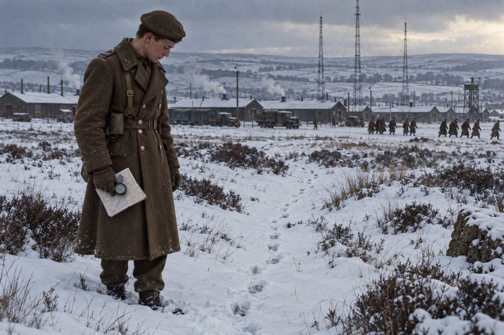

Ключ

Глава первая
On the idle hill of summer,
Sleepy with the flow of streams,
Far I hear the steady drummer
Drumming like a noise in dreams.(На праздном летнем холме, сонный от журчания ручьёв, я слышу вдали мерного барабанщика, который бьёт, как будто во сне.)
— А. Э. Хаусман, «Шропширский парень», XXXV
Конверт со штампом военного министерства пришёл в Линкольншир в середине октября, как и предполагал Морс, и пришёл на адрес, который он и предполагал: в дом таксиста Сирила Морса, где Эндевор провёл всё лето и половину осени, читая в задней комнате Хаусмана и помогая мачехе Гвен вешать бельё, потому что это было единственное занятие в доме, при котором не нужно было разговаривать с отцом. В конверте лежали повестка, проездное требование на поезд и отпечатанная на машинке инструкция, из которой следовало, что рядовому Морсу надлежит в первых числах декабря явиться на станцию Каттерик-Кэмп в Северном Йоркшире для прохождения национальной службы в Королевском корпусе связи, имея при себе бритвенный прибор, зубную щётку и не более одного чемодана.
Отец прочёл повестку за завтраком, вернул её через стол и сказал, что армия из многих делала людей. Сказал он это не со злорадством, а с тем же выражением, с каким сообщал пассажирам, что дорога на Линкольн перекрыта и придётся ехать в объезд. Гвен сказала, что положит ему в чемодан тёплые носки. Сводная сестра Джойси, которой было пятнадцать, сказала, что напишет ему, и единственная из всех действительно написала.
Морс родился раньше первого октября 1939 года, и национальная служба1 его не миновала. Отсрочку он сдал сам, в июне, письмом Мастеру колледжа Лонсдейл. Таким образом, он принадлежал к самым последним из тех, кого в Англии забирали в армию не спрашивая, и неизвестно, утешало ли его это.
Поезд пришёл на станцию Каттерик-Кэмп в сумерках. Станция была маленькой, платформа короткой, и на ней, ещё до того как поезд остановился, уже стояли несколько капралов в беретах и шинелях, и один из них, коренастый, краснолицый, с голосом, которым можно было бы останавливать грузовики, начал кричать раньше, чем открылись двери. Он кричал, что они больше не маменькины сынки, что вещи надо брать в руки, а не волочить, что строиться надо в три шеренги, а не как попало, и что в армии не ходят, а бегают. Последнее оказалось чистой правдой: следующие четыре недели Морс не помнил, чтобы ходил хоть куда-нибудь шагом.
Их было человек сорок, из Ливерпуля, Бирмингема, Шеффилда, Глазго и из таких мест, названий которых Морс раньше не слышал, и всех их погрузили в армейские грузовики с брезентовым верхом и повезли в темноте мимо бесконечных рядов одинаковых деревянных бараков, мимо плаца, мимо чего-то, что пахло углём и капустой, а потом выгрузили, построили, пересчитали и погнали бегом на вещевой склад. Там через окошко в стене им выдавали всё, что, по мнению армии, нужно человеку: шинель, две полевые формы, береты, две пары ботинок, парусиновые туфли, шесть пар носков, рубашки, ремни и подсумки из зелёной парусины, миску, кружку, нож, вилку и ложку, а также маленький матерчатый мешочек с иголками и нитками, который в армии почему-то называют «хозяйкой». Тут же капрал объявил, что на шинели к утру должны быть пришиты все пуговицы и что те, у кого они не будут пришиты, узнают, что такое армия, раньше остальных.
Потом была перекличка. Капрал читал фамилии по списку, и новобранцы отвечали «здесь, капрал», и Морс стоял в строю с шинелью на руке и с тем холодком в животе, который знаком каждому, кто знает, что сейчас произойдёт, и ничего не может с этим поделать. Список был армейский. В армейских списках, в отличие от прокторских книжек, пишут имя полностью.
— Морс! — прочёл капрал и запнулся. Он поднёс бумагу ближе к лампе, посмотрел на неё так, словно в ней была опечатка, и прочёл медленно, по слогам, с той особенной интонацией, с какой читают вслух чужое неприличное письмо: — Эн-де-вор. Эндевор Морс. Это что ещё за имя такое, рядовой?
Строй захохотал. Смеялись все сорок человек, смеялись от усталости, от холода, от страха перед тем, что будет завтра, и оттого, что наконец нашлось что-то, над чем можно смеяться. Морс стоял, глядя прямо перед собой, и чувствовал, как у него горят уши, точно так же, как горели они в линкольнширской школе пятнадцать лет назад.
— Имя корабля, капрал, — сказал он. — Капитана Кука.
— Корабля! — капрал был в восторге. — Слышали? У нас тут корабль! Ну, держись, корабль, тут тебе не море.
Смеялись все, кроме одного. Рядом с Морсом стоял светловолосый парень лет двадцати, в очках, тонкий, как жердь, с острым подбородком и с чемоданом, перевязанным бечёвкой. Он не смеялся. Когда смех стих и капрал пошёл дальше по списку, парень, не поворачивая головы, сказал вполголоса:
— На «Индеворе» Кук открыл восточный берег Австралии. Хорошее имя. Мне всегда нравилось.
Морс покосился на него. Парень смотрел прямо перед собой, как положено в строю, и только уголок рта у него чуть дрогнул.
— Эшби, — сказал он так же тихо. — Колин. Шеффилд.
Потом капрал, просматривая бумаги, обнаружил в графе «образование» слово «Оксфорд» и сообщил строю, что корабль, оказывается, ещё и учёный. К концу первой недели прозвище «Корабль» умерло само собой, потому что было слишком длинным для армейского употребления, и на его месте выросло другое, короткое и неизбежное, которое Морс потом носил до самого конца службы: «Профессор». Морс принял его почти с благодарностью. Профессором можно было быть. Эндевором нельзя было быть нигде.
Ночью, в бараке, при свете единственной лампочки под потолком, сорок человек пришивали пуговицы к шинелям. Кто-то колол пальцы и ругался, кто-то пришивал пуговицы вверх ногами, кто-то плакал, отвернувшись к стене, и делал вид, что сморкается. Морс, который в жизни не держал в руках иголки, если не считать ту, которой зашивал в Оксфорде мантию, проткнул себе палец четыре раза и на пятой пуговице понял, что не успеет. Колин Эшби, лежавший на соседней койке, давно закончил свои, посмотрел на Морса, молча взял у него шинель и пришил оставшиеся три пуговицы так ровно и быстро, словно делал это всю жизнь.
— Мать у меня портниха, — сказал он, возвращая шинель. — А отец учитель. Так что я умею и пуговицы, и латынь. Ты ведь латынь учил?
Морс сказал, что учил.
— Значит, будем дружить, — сказал Эшби и отвернулся к стене.
Морс лёг. Барак был холодный, одеяла колючие, матрас тонкий, и где-то в дальнем конце кто-то храпел так, словно пилил дрова. Морс лежал, глядя в темноту, и думал о том, что ещё полгода назад засыпал под колокола Оксфорда, а теперь будет засыпать под этот храп два года, и что это, если подумать, справедливо. Он думал о Сьюзан, и о том, что не будет о ней думать, и о том, что в армии, говорят, нет времени думать, и что это, вероятно, лучшее, что в армии есть. Потом он заснул. Насчёт времени он был прав, а насчёт армии неправ: думать ему в ближайшие месяцы придётся больше, чем за все три года в Оксфорде, и начнёт он думать раньше, чем кончится зима, а причиной будет человек, который в первую ночь пришил ему пуговицы.
Глава вторая
Не определено ли человеку время на земле, и дни его не то же ли, что дни наёмника?
— Книга Иова 7:1
Барак, в котором прошли первые четыре недели армейской жизни Морса, принадлежал к тому виду строений, которые в британской армии называли «пауками». Это было длинное одноэтажное деревянное здание, устроенное так, что от короткого центрального коридора, где помещались умывальники, уборные и ванны, отходили в стороны шесть длинных спален, как ноги от туловища, и если смотреть на него сверху, оно и правда напоминало паука, хотя сверху на него, кроме ворон, никто не смотрел. В каждой спальне стояло по тридцать коек, по пятнадцати вдоль каждой стены, и посередине, на железном листе, круглая чугунная печка, которую топили коксом и которая раскалялась докрасна в радиусе двух шагов, а дальше не грела совсем.
Кокса полагалось столько, сколько полагалось, то есть меньше, чем нужно, и уже на второй вечер Морс узнал, что в Каттерике, как и во всех лагерях, где зимой стоят печки, действует закон, не записанный ни в одном уставе: кокс, который лежит у соседнего барака, принадлежит тому, кто первым его унесёт. Исполнял этот закон в их спальне Рурк.
Патрику Рурку было двадцать лет, он был родом из Ливерпуля, сын докера и сам до призыва докер, широкий, как дверь, с кулаками, которые свисали у него из рукавов, как гири, с весёлыми светлыми глазами и с тем дружелюбием, которое у таких людей держится ровно до первого возражения. В первую же ночь он занял койку у печки, во вторую назначил себя старшим по спальне, в третью составил список тех, кто будет ходить за чужим коксом. Ходили по двое, после отбоя, с вёдрами, и никто не возражал, потому что возражать Рурку было так же бессмысленно, как возражать погоде.
Возразил Колин Эшби. Он сказал это спокойно, лёжа на койке и не отрываясь от книжки, которую читал при свете фонарика: что за кокс он платить готов, а воровать не пойдёт, потому что у соседей тоже холодно. Рурк подошёл, постоял над ним и сказал, что у профессора теперь есть ассистент, второй профессор, и что у профессоров, видно, кровь горячая, раз им не холодно. Спальня засмеялась. Эшби перевернул страницу. Рурк постоял ещё, потом пожал плечами и ушёл к печке. В ту ночь за коксом ходили другие, а Эшби на следующее утро нашёл свои ботинки, начищенные накануне до зеркального блеска, в бочке с водой у входа.
Новобранцу выдавали ботинки с пупырчатой кожей на носках, и пупырышки эти надлежало уничтожить, разогревая над свечой черенок ложки и разглаживая им кожу, а потом слой за слоем наводить на ботинки ваксой и слюной такой блеск, чтобы в носке можно было разглядеть собственное лицо. На это уходили вечера. Ремни и подсумки нужно было покрывать зелёной краской, которую называли «бланко», латунные пряжки полировать, пол в спальне натирать тяжёлым чугунным полотёром на длинной ручке, а одеяла, простыни и всё снаряжение по утрам раскладывать на койке в точности по рисунку, висевшему на стене. Если хоть одна вещь лежала не так, капрал сбрасывал всю раскладку на пол. Смысл этих занятий состоял, по всей видимости, не в чистоте, а в том, чтобы у человека не оставалось ни времени, ни сил ни на что, кроме них, и армия знала, что делала.
Эшби вытащил ботинки из бочки, вытер, посидел над ними минуту и начал всё сначала, и к утреннему осмотру они блестели не хуже прежнего, только сам он не спал до трёх. Морс просидел с ним до трёх. Он не умел натирать ботинки, но умел держать свечу, и Эшби, водя ложкой по коже, рассказывал ему шёпотом про Шеффилд, про отца, который преподавал в грамматической школе математику и решал по вечерам кроссворд в «Таймс» за двадцать минут, и про то, что сам он тоже решает, только за сорок.
— А ты? — спросил он.
Морс сказал, что решает, сколько себя помнит, но ни разу не смотрел на часы.
— Как это может быть? — Эшби искренне удивился. — Без часов это не кроссворд, а вышивание. Кроссворд — это та же латынь, только по-английски и наперегонки. Там каждое слово врёт, и надо понять, как именно оно врёт, раньше, чем поймёт другой.
На следующей неделе Эшби добыл где-то позавчерашнюю «Таймс», и они решали кроссворд вдвоём, под одеялом, при фонарике, пока капрал не отобрал фонарик. Эшби засекал время по своим часам, и Морс решил быстрее него. Из всех привычек, приобретённых Морсом в армии, эта, решать кроссворд на время, поглядывая на часы, оказалась единственной, которую он сохранил до конца жизни.
Ещё у Эшби была записная книжка в чёрной клеёнчатой обложке, куда он каждый вечер что-то писал, и когда Морс однажды спросил, что это, Эшби засмеялся и сказал, что ведёт дневник, но так, чтобы капрал не прочёл. Морс заглянул ему через плечо и увидел столбики бессмысленных букв, разбитых на группы по пять, вроде «КЛМРТ» или «ОБЕСЗ». Эшби захлопнул книжку и сказал, что это упражнение и что когда-нибудь он научит Морса, а пока пусть тот потренируется угадывать. Морс не угадал. Угадать ему ещё предстояло, и в обстоятельствах, при которых он предпочёл бы не угадывать вовсе.
Над всем этим миром, над спальнями, печками, полотёрами, капралами и самим Рурком, стоял полковой старшина Харгривз. В британской армии полковой старшина, высший из сержантов, не имеющий офицерского чина, есть фигура, которую новобранец боится больше полковника и больше Бога, потому что полковника он видит раз в месяц, а Бога не видит вовсе, а старшину видит каждое утро на плацу. Харгривз был высок, прям, с нафабренными усами, с тростью под мышкой и с голосом, который, казалось, раздавался одновременно отовсюду, так что новобранцы на дальнем краю плаца вздрагивали, когда он кричал на ближних. Он почти не замечал их по отдельности. Он замечал строй, и если строй был кривым, весь строй узнавал об этом.
Однажды он всё-таки заметил Морса. Это было на третьей неделе, на строевых занятиях, когда Морс сбился с ноги, и Харгривз, остановившись перед ним, долго рассматривал его сверху вниз, как рассматривают на рынке лошадь, а потом сказал негромко, почти дружелюбно:
— Оксфорд, говорят?
— Так точно, сэр.
— Отставить «сэр». Я старшина, а не офицер. Зови меня «старшина». — Он помолчал. — Мозги, значит, есть. Ноги вот только не те. Ничего. Ноги армия выправит. А мозги армии пригодятся. Таких, как ты, Профессор, в армии ценят, если они понимают, где их место.
Он пошёл дальше, а Морс ещё долго не мог понять, похвалили его или пригрозили. Позже он понял, что старшина Харгривз умел делать это одновременно и что это было в нём самое опасное.
Рождество они встретили в лагере. Повар-сержант расщедрился на индейку, которую распределили по сорок граммов на человека, из столовой доносились пение и звон кружек, Рурк напился пива из лавки военторга, которую в армии называют «Наафи», и пел ливерпульские песни так громко, что его было слышно в соседнем бараке. Эшби весь вечер писал письмо, обычными буквами, не цифрами, и когда Морс спросил, кому, ответил, не поднимая головы, что одной девушке в Ричмонде, которую он видел два раза в жизни и на которой собирается жениться. Морс ничего не сказал. Он подумал о девушке в Джерико, которую видел гораздо больше двух раз и на которой так и не женился, и вышел покурить на мороз, хотя не курил.
Над лагерем висело чёрное небо в крупных северных звёздах, и вдали, над пустошами, светились красные огни на верхушках радиомачт. Морс постоял, глядя на них, и подумал, что эти огни, должно быть, и есть единственное во всём лагере, что имеет отношение к связи, а всё остальное имеет отношение только к ботинкам. Он ошибался, как скоро выяснилось, и выяснилось это на следующей же неделе, когда новобранцам объявили, что им предстоят испытания на пригодность к специальности.
Глава третья
Не знаете ли, что бегущие на ристалище бегут все, но один получает награду?
— Первое послание к Коринфянам 9:24
Испытания на пригодность проводились в первую неделю января в длинном классе с покатыми партами, где пахло мелом и мокрыми шинелями, и длились два дня. Новобранцам раздавали листы с вопросами и карандаши, и они отвечали: сколько будет, если к семи прибавить половину от двенадцати и умножить на три; какая фигура в ряду лишняя; что означает слово, которого никто из них никогда не слышал; потом им ставили в наушники писк азбуки Морзе, и нужно было различить, одинаковы два сигнала или нет. При этом последнем испытании рядовой Морс, к удовольствию всего класса, был объявлен прирождённым связистом, раз уж носит такую фамилию, и выслушал эту шутку в одиннадцатый раз за месяц с тем же лицом, что и в первый.
От результатов зависело всё. Это знали даже те, кто не знал, сколько будет семь плюс шесть. Связисты в армии бывали разные: одни тянули провода по столбам в дождь и грязь, другие водили грузовики, третьи сидели в тёплых фургонах у раций, четвёртые работали на телетайпах в штабах. А на самом верху этой лестницы, в комнатах, куда не пускали даже офицеров без особого допуска, сидели шифровальщики. Их было мало, они служили в штабах, их не гоняли на учения в грязь, и про них говорили, что они знают всё, что знает генерал, только раньше генерала. Шифровальщиком хотел стать каждый, у кого хватало ума этого хотеть.
Список вывесили через неделю на доске у канцелярии. На курс шифровальщиков отобрали семнадцать человек из двухсот. Морс нашёл свою фамилию четвёртой, фамилию Эшби первой, и, к изумлению всей спальни, где-то в середине списка стояла фамилия Рурка.
Рурк, казалось, удивился меньше всех. Он стоял перед доской, засунув руки в карманы, и улыбался так, будто выиграл в лотерею, на которую не покупал билета, и когда кто-то из спальни сказал, что не знал за ним таких мозгов, Рурк ответил, что мозги у докеров бывают, просто их никто не ищет. Эшби промолчал. Морс заметил, что он посмотрел на Рурка долгим, внимательным взглядом, тем же, каким смотрел на кроссворд, когда слово не сходилось.
Курсантов перевели в другие линии лагеря. Линии Каттерика, то есть кварталы бараков, принадлежавших одному полку, назывались по полям сражений Первой мировой войны, Сомма, Вими, Лос и тому подобное, и в те годы, когда большинство их обитателей уже не помнили, где эти поля и что там было, названия эти звучали как перечень станций на пригородной линии, ведущей неведомо куда. Новый «паук» был таким же, как прежний, только с тщательно вымытыми окнами и с табличкой на двери класса, на которой было написано: «Посторонним вход запрещён».
В первый же день курсанты подписали обязательство о неразглашении государственной тайны по Закону о государственной тайне, бумагу, в которой было много слов и одна мысль: что всё, что они здесь увидят и услышат, принадлежит Её Величеству и что если они расскажут об этом хоть кому-нибудь, хоть матери, хоть девушке, хоть собственной подушке, то сядут в тюрьму. Морс держал это слово всю свою не слишком долгую жизнь, и из уважения к нему о подробностях шифровального дела и сейчас, по совести, лучше помолчать. Шифровальщик того времени работал с машиной, похожей на большую пишущую машинку с вращающимися колёсами внутри, печатавшей зашифрованный текст на бумажную ленту, с таблицами, которые менялись каждые сутки, и с правилами, которые не менялись никогда.
Сержант-инструктор Пайк вошёл в класс ровно в восемь. Это был человек лет сорока пяти, невысокий, сухой, гладко выбритый, с тщательно зачёсанными тёмными волосами, в отутюженной форме, с жёлтыми от табака пальцами и с тихим, ровным голосом, которым он, кажется, никогда не пользовался громче, чем нужно, чтобы его услышали в последнем ряду. На правом мизинце у него был перстень-печатка, на котором любой, кто знал, на что смотреть, разглядел бы циркуль и угольник. Морс, сидевший в третьем ряду, не знал, на что смотреть, и не разглядел.
— Шестнадцать недель, — сказал сержант Пайк, оглядев класс. — Каждую пятницу письменный экзамен. Не сдал один раз, повторяешь неделю. Не сдал три раза, уходишь с курса. Куда уходишь, решает армия. Армии всегда нужны люди, которые тянут провод на столбах в Кении или в Адене. — Он помолчал. — Я двенадцать лет вожу этот курс. Обычно до конца доходят четверо. Иногда пятеро. Посмотрите направо, посмотрите налево. Через четыре месяца ни того, ни другого рядом с вами не будет.
Курсанты посмотрели направо и налево. Справа от Морса сидел Эшби и улыбался. Слева сидел Дерек Нотт, сын почтмейстера из Корнуолла, до призыва три года проработавший в банке в Труро, круглолицый, румяный и обладавший, как скоро выяснилось, способностью складывать в уме столбцы шестизначных чисел быстрее, чем Пайк записывал их на доске. Нотт посмотрел на Морса, Морс на Нотта, и оба, не сговариваясь, решили, что сержант Пайк ошибается насчёт них. Насчёт них двоих сержант Пайк действительно ошибся.
После занятий, у дверей класса, Эшби задержал Морса.
— Ты видел, как Рурк улыбался у доски? — спросил он тихо.
— Видел.
— Рурк сделал на испытаниях четыре ошибки в арифметике. Я сидел за ним и видел его лист, — Эшби помолчал. — А в списке он десятый. Выше половины тех, кто ошибок не делал.
Морс пожал плечами и сказал, что в армии, наверное, считают не только арифметику и что у Рурка, может быть, хороший слух на морзянку.
— Может быть, — сказал Эшби. — А может быть, кто-то знает ответы раньше, чем мы получаем вопросы.
Он сказал это так спокойно, что Морс решил, будто он шутит, и засмеялся. Эшби не засмеялся. Он достал из кармана свою чёрную записную книжку, раскрыл её и что-то записал, медленно, цифрами, по три числа в группе. Морс смотрел, как он пишет, и думал о том, что Эшби, должно быть, просто завидует Рурку, как все завидуют везучим. Это была первая, но далеко не последняя ошибка Морса в этой истории, и из всех его ошибок она обошлась дороже всего, хотя расплачиваться за неё пришлось не ему.
Глава четвёртая
День дню передаёт речь, и ночь ночи открывает знание.
— Псалом 18:3
Об одном всё же сказать нужно, потому что без этого не понять ни Морса, ни того, что случилось дальше. В первую же неделю курса Морс обнаружил, что ему нравится.
Ему нравилось не то, что нравилось остальным, не тепло, не близость к генералам и не таинственность, а нечто, чего он не умел бы объяснить даже Эшби. В шифровальном деле был тот же порядок, что в латинском стихе: строгий, неумолимый, не терпящий ни одной ложной долготы, и за этим порядком, как за решёткой стиха, пряталось что-то живое, что нужно было выпустить на волю или, наоборот, запереть. Сержант Пайк объяснял, как устроены таблицы и почему ключи меняются каждые сутки, рассказывал, как во время войны чужие шифровальщики губили собственные шифры ленью, повторяя одни и те же слова в начале каждого донесения (откуда он это знает, Пайк не говорил, а курсанты не спрашивали), и Морс слушал его так, как три года назад слушал Пенхаллоу, с тем же чувством, что перед ним открывают дверь в комнату, о существовании которой он всегда подозревал.
В пятницу был первый экзамен. Курсантам раздали отпечатанные на множительном аппарате листы с заданиями, ещё пахнущие спиртом и лиловой краской, и дали на всё два часа. Морс закончил за сорок минут, проверил, закончил ещё раз и сдал за час. Эшби сдал на пять минут раньше. В понедельник Пайк зачитал результаты: двое не сдали, остальные прошли, Эшби первым, Морс вторым, Нотт третьим, Рурк шестым.
Во вторую пятницу не сдали трое, и один из них, тихий парень из Дерби, не сдавший уже второй раз, на следующий день попросил перевести его в телеграфисты, не дожидаясь третьего. В третью пятницу ушёл ещё один. Пайк читал результаты своим ровным голосом, не меняясь в лице, и курсанты, слушая его, приучились не смотреть друг на друга, потому что смотреть на того, кто не сдал, было так же неловко, как смотреть на человека, которого увозят в больницу.
Рурк сдавал. Это было самое странное из всего, что происходило на курсе, и, кажется, замечали это только двое. На занятиях Рурк путался в таблицах, переспрашивал, списывал у соседа и однажды, отвечая у доски, так перепутал порядок операций, что Пайк, не повышая голоса, сказал ему, что если он так зашифрует донесение в штабе, то противник прочтёт его раньше, чем адресат. А по пятницам Рурк сдавал свой лист через полтора часа, с тем же довольным видом, с каким стоял у доски объявлений, и в понедельник оказывался где-то посередине списка. С ним так же уверенно сдавали ещё двое, один из Бирмингема, другой из Лидса, оба не блиставшие на занятиях и оба, как заметил Эшби, по субботам угощавшие всю спальню пивом в «Наафи» на деньги, которых у рядового с его жалованьем быть не могло.
Эшби говорил об этом Морсу трижды. Первый раз в понедельник после первого экзамена, второй через неделю, а третий раз в субботу, когда они шли из «Наафи» по обледенелой дорожке между бараками.
— Я знаю, откуда они берут ответы, — сказал он. — Почти знаю. Мне не хватает одного.
— Откуда?
— Если я скажу, а это неправда, я оклеветал человека, — сказал Эшби. — А если это правда, то тебе лучше этого не знать, пока у меня нет доказательства. Ты же сам говорил, что твой старик в Оксфорде хотел повесить человека на одном слоге и не успел. Я не хочу не успеть.
Морс рассказал ему про Пенхаллоу в первую неделю, ночью, у печки, в подробностях, которых не рассказывал никому, и теперь пожалел об этом: ему показалось, что Эшби играет в Пенхаллоу, как мальчишка играет в сыщика. Он сказал, что в армии бывают вещи и похуже, чем шпаргалки, и что никто от этого не умирает. Эшби посмотрел на него сквозь запотевшие очки и сказал, что в штабе, куда пошлют шифровальщика, купившего экзамен, от этого как раз и умирают, только не сразу и не сами. Морс не нашёлся, что ответить. Эшби в эту минуту был старше его не на год, а лет на десять.
По вечерам Эшби что-то писал в своей чёрной книжке цифрами, а по воскресеньям, получив увольнительную, уезжал на автобусе в Ричмонд, маленький старинный городок в трёх милях от лагеря, с замком над рекой и рыночной площадью, и возвращался к отбою с таким лицом, какое бывает у человека, которому только что сказали «да». Однажды он вернулся с книжкой в мягкой обложке, засунутой во внутренний карман шинели, и, когда Морс попытался посмотреть, что это, Эшби засмеялся и спрятал её под матрас.
— Подарок, — сказал он. — От неё. Ты, Профессор, будешь смеяться, если узнаешь, что это. Так что не узнаешь.
Морс не стал настаивать. Он вообще в те недели мало чем интересовался, кроме шифров и кроссвордов, и меньше всего чужими девушками, потому что от мысли о чужих девушках ему неизбежно приходилось думать о своей, которая своей больше не была. Эта нелюбопытность, такая похвальная в шифровальщике, обойдётся Морсу в две недели напрасных трудов.
В последний понедельник января сержант Пайк объявил, что в четверг курс выходит на полевые учения. Шифровальщик, объяснил он, не всегда сидит в тёплой комнате при штабе: штабы на войне переезжают, и шифровальщик едет вместе с ними, и должен уметь найти дорогу ночью, по карте и компасу, к месту, где развернули станцию. Курсантам предстояло разойтись поодиночке, каждому со своей маршрутной карточкой, на которой будут указаны координаты трёх контрольных точек на пустоши, и к полуночи собраться у последней, где их будет ждать грузовик.
— Поодиночке, — повторил Пайк. — На войне никто не держит вас за руку. Кто не придёт к полуночи, получит взыскание и пересдачу. Вопросы?
Вопросов не было. Рурк спросил только, будет ли в грузовике чай, и Пайк сказал, что будет, и все засмеялись. За окном класса шёл снег, мелкий и сухой, такой, какой бывает в Йоркшире в конце января, когда кажется, что он никогда не начнётся всерьёз.
Вечером, укладываясь, Эшби вдруг сказал Морсу, не оборачиваясь, что в четверг, после учений, он, наверное, пойдёт к адъютанту.
— Зачем?
— За тем самым одним, чего мне не хватало, — сказал Эшби. — Кажется, у меня теперь есть всё. — Он помолчал. — Если что, Профессор, книжку мою не выбрасывай. Ты её прочтёшь. Ты умнее меня, только ленивее.
Морс сказал, что это звучит как завещание, и Эшби засмеялся в подушку и сказал, что завещание пишут не цифрами.
Глава пятая
Ибо снегу Он говорит: будь на земле.
— Книга Иова 37:6
В четверг, двадцать восьмого января, в семь часов вечера, тринадцать курсантов, оставшихся к этому времени на курсе, погрузились в крытый грузовик у ворот лагеря, и грузовик, гремя и подпрыгивая, повёз их на запад, к пустошам2. Днём, в хорошую погоду, там видно на много миль. Ночью там не видно ничего, кроме того, что светит, а светит там ничего.
Грузовик останавливался каждые десять минут, и сержант Пайк, сидевший в кабине рядом с водителем, выходил, откидывал брезент и называл фамилию. Курсант спрыгивал на дорогу, Пайк при свете фонаря вручал ему маршрутную карточку, сложенную карту и компас, говорил «полночь, сбор у грузовика» и возвращался в кабину, и грузовик ехал дальше, оставляя на обочине одинокую фигуру в шинели, которая сразу становилась частью темноты. Эшби высадили пятым. Он спрыгнул, обернулся, помахал рукой тем, кто оставался под брезентом, и Морс, сидевший у самого края, увидел при свете фонаря, как Эшби, взяв карточку из рук Пайка, сразу развернул её и стал читать, шевеля губами, а Пайк стоял рядом и ждал, пока он прочтёт. Потом брезент опустился. Морса высадили восьмым.
На его карточке, написанной от руки ровным, разборчивым почерком, стояли три группы цифр: координаты трёх точек на карте3, а ниже, отдельно, координаты точки сбора у старой каменной овчарни при дороге. Что бывает, если ошибиться в одной цифре, сержант Пайк напоминал курсантам на каждом занятии по картам.
Морс нашёл первую точку за сорок минут. Это был пограничный камень у ручья, и к нему проволокой была привязана жестяная коробка с тетрадью и карандашом, в которую полагалось вписать фамилию и время. Он вписал. Перед ним уже расписались двое. Вторую точку, развалины пастушьей хижины, он нашёл за час, потому что дважды сбился в темноте и один раз провалился по колено в торфяную яму, полную ледяной воды. В тетради на второй точке стояло четыре фамилии. Фамилии Эшби не было ни там, ни там, но это ничего не значило: у каждого был свой порядок точек, и Морс знал, что Эшби высадили на другой стороне долины.
Около десяти пошёл снег. Сначала он падал, как днём, мелкий и сухой, а потом ветер переменился, задул с северо-востока, и снег пошёл стеной, косо, так густо, что фонарик освещал перед Морсом только белую стену, крутящуюся в двух шагах от лица. Карта намокла. Компас приходилось держать у самых глаз. Морс шёл, считая шаги, как учили: по ровной земле сто двадцать шагов на каждые сто ярдов, а в гору больше, — и думал при этом не о карте, а о том, что в Оксфорде, в Старой библиотеке, ему было, пожалуй, холоднее, только он этого тогда не замечал.
На гребне холма, перед третьей точкой, он остановился, чтобы перевести дух, и снег на минуту поредел. Внизу, в долине, было темно. Но далеко справа, на севере, там, где по его карте не было ничего, кроме открытой пустоши и обозначенных синим штрихом верховий какого-то ручья, он увидел огонёк. Маленький жёлтый огонёк фонарика, качавшийся вверх и вниз, как качается фонарь в руке идущего человека. Огонёк двигался не к нему и не к дороге, а прочь, на север, в сторону, где на карте не было ни одной точки и ни одной тропы. Морс смотрел на него секунд десять, и подумал, что кто-то из курсантов заблудился, и подумал, что этот кто-то, наверное, Рурк, и чуть было не улыбнулся. Потом снег пошёл снова, и огонёк исчез.
Морс потом много лет вспоминал эти десять секунд на гребне холма и, вспоминая их, ни разу не улыбнулся.
Третью точку, старый межевой столб, он нашёл почти на ощупь. Тетрадь в жестянке промокла, карандаш не писал, и Морс вписал фамилию, расковыряв грифель ногтем. До овчарни оставалось полторы мили по дороге. Он вышел к грузовику без двадцати двенадцать, восьмым из тринадцати, весь в снегу, с ледяными ногами и с чувством, будто он выиграл войну. В кузове горел фонарь, пахло мокрой шерстью и чаем из термоса, и Рурк, пришедший четвёртым, хлопнул его по плечу и сказал, что Профессор, выходит, умеет не только думать, но и ходить.
В полночь в кузове сидели одиннадцать человек. Без десяти час пришёл двенадцатый, парень из Лидса, с разбитым о камень коленом, ругаясь так, что пар стоял над ним облаком. Эшби не было.
Сержант Пайк, стоявший у кабины, посмотрел на часы, потом на дорогу, потом снова на часы. Лицо его в свете фонаря было спокойным, только он закурил, хотя курить у грузовика сам же запретил, и Морс заметил, что спичка погасла у него дважды, прежде чем он донёс её до сигареты. В половине второго Пайк сел в кабину и по рации, которая была в грузовике, связался с лагерем. Что он говорил, курсанты не слышали из-за ветра. Потом он вылез, откинул брезент и сказал, что все поедут в лагерь, а он с водителем останется ждать курсанта Эшби, который, вероятно, укрылся где-нибудь от снега, как и положено толковому солдату, и придёт утром.
— Я видел огонь на севере, сержант, — сказал Морс. — С гребня перед третьей точкой. Около одиннадцати. Кто-то шёл на север, по открытой пустоши.
Пайк повернулся к нему. Мгновение он смотрел на Морса так, как будто не узнавал его, потом сказал, что примет к сведению, и что на севере там ничего нет, и что Эшби там делать нечего, потому что ни одна точка его маршрута туда не ведёт.
Курсантов отвезли в лагерь. Морс не спал. Он лежал на койке в темноте, слушал, как в трубе печки воет ветер, смотрел на соседнюю койку, пустую, аккуратно застеленную по рисунку на стене, с краешком книжки, торчавшим из-под матраса, и думал о маленьком жёлтом огоньке, который уходил на север. Морс думал правильно. Он думал, что тот, кто держал этот фонарик, шёл не наугад, а уверенно, по прямой, как идут к точке, координаты которой знают. Тогда ему не пришло в голову, что из этого следует. Это пришло ему в голову через две недели.
Глава шестая
Входил ли ты в хранилища снега и видел ли сокровищницы града?
— Книга Иова 38:22
Эшби нашли в пятницу, около трёх часов дня, когда снег уже перестал и над пустошами стояло низкое, белёсое, неподвижное небо. Нашёл его не поисковый отряд, который с рассвета прочёсывал долину вокруг маршрута курсантов, а пастух с фермы на северном склоне, искавший своих овец. Его собака остановилась над сугробом в овраге, у самой воды, там, где ручей, обозначенный на карте синим штрихом, промыл себе в торфе глубокое русло, и начала лаять и разгребать снег лапами.
Овраг лежал в трёх с половиной милях к северу от третьей точки маршрута Эшби и в четырёх милях от овчарни, где стоял грузовик. Эшби лежал на боку, подтянув колени к груди, в шинели, застёгнутой на все пуговицы, которые сам когда-то пришивал так ровно, с карточкой и компасом в кармане, с погасшим фонариком в руке. Очки его нашли потом, весной, когда стаял снег, на дне ручья, в двадцати шагах выше по течению. Армейский врач сказал, что смерть наступила от переохлаждения, вероятно, между полуночью и тремя часами ночи, и что перед этим курсант, видимо, упал в овраг в темноте и повредил ногу, отчего не смог выбраться. Лодыжка была сломана.
В лагерь его привезли на санитарной машине, и вся рота стояла у бараков, когда машина проезжала мимо, и никто не сказал ни слова, даже Рурк. Морс стоял рядом с Ноттом и смотрел, как машина сворачивает к госпиталю, и думал о том, что не может вспомнить, какого цвета у Эшби были глаза. За два месяца, проведённые на соседних койках, он не посмотрел ему в глаза ни разу, потому что Эшби всегда носил очки, а очки всегда были запотевшими. Эта мысль показалась ему тогда самой страшной из всех, и, может быть, Морс был не так уж неправ.
В армии смерть солдата не в бою расследует военный следственный совет, то есть комиссия из нескольких офицеров, которая выслушивает свидетелей, изучает обстоятельства и пишет заключение. Кроме того, поскольку смерть случилась в Англии, своё дознание проводит гражданский коронёр. Совет собрался во вторник, в канцелярии полка: председательствовал майор с седыми висками и усталым лицом, рядом сидели адъютант полка, капитан Лайл, молодой, подтянутый, с внимательными глазами, и ещё один лейтенант, который за всё заседание ни разу не открыл рта и, по мнению курсантов, был взят для кворума.
Выслушали сержанта Пайка. Пайк говорил спокойно и точно, как на занятии. Учения были обычными, проводились на этом курсе двенадцать лет подряд, маршруты составлялись им лично, разные для каждого курсанта, так, чтобы курсанты не ходили друг за другом. Курсант Эшби был лучшим на курсе, способным и толковым, но, если говорить откровенно, несколько самонадеянным, склонным полагаться на свою голову больше, чем на компас. Прогноз погоды на вечер обещал лёгкий снег, и метели никто не ждал. Сержант выразил своё глубокое сожаление. Выслушали водителя и пастуха. Выслушали армейского врача.
Потом выслушали Морса. Он рассказал про огонёк на севере, про то, как он двигался, ровно и не останавливаясь, прочь от маршрута, и прибавил, сам удивившись тому, что говорит это вслух перед майором, что заблудившийся человек обычно ходит кругами, а этот шёл по прямой, как будто знал, куда идёт. Майор кивнул и сказал, что совет примет это к сведению. Капитан Лайл что-то записал и посмотрел на Морса чуть дольше, чем требовалось. Потом председатель поблагодарил свидетеля и отпустил его.
Заключение совет составил к вечеру того же дня, и курсанты узнали его на следующее утро из приказа, зачитанного на построении: смерть в результате несчастного случая; курсант, по всей видимости, потерял ориентировку во время метели, принял направление на север за направление к точке сбора и, упав в овраг в темноте, получил травму, лишившую его возможности двигаться; вины командования не усматривается; рекомендуется впредь проводить ночные учения на пустоши парами. Через две недели гражданский коронёр в Ричмонде пришёл к тому же выводу, сформулировав его ещё короче: смерть от несчастного случая.
Морс выслушал приказ на плацу, стоя в строю, и почувствовал то же, что почувствовал полгода назад в комнате на четвёртой лестнице Лонсдейла, когда инспектор Ферн объяснил ему, что умирающие делают ошибки, каких не сделали бы в здравом уме. Объяснение было разумным. Оно объясняло всё. И оно было неправдой, Морс знал это так же твёрдо, как знал, что первый слог в слове «felix» долгий, и так же, как тогда, не мог бы объяснить, откуда знает.
Позже, когда в кладовой роты интендантский капрал складывал вещи Эшби в деревянный ящик, чтобы отправить их родителям в Шеффилд, Морс стоял рядом, потому что капрал попросил кого-нибудь из соседей по койке помочь составить опись. В ящик легли шинель, ботинки, бритва, письма, перевязанные бечёвкой, фотография пожилой пары на крыльце кирпичного дома и тонкая книжка в мягкой обложке, которую Морс, вытащив из-под матраса, положил в ящик, не взглянув на обложку, потому что смотреть было неловко и потому что он думал о другом. Об этой минуте Морс будет жалеть ровно две недели.
Чёрной записной книжки в ящике не было. Морс нашёл её ещё в пятницу вечером, когда пришло известие, засунутой глубоко в щель между матрасом и железной рамой койки, где её никто не стал бы искать, и переложил в собственный карман. Он не мог бы сказать, почему не отдал её капралу. Он только помнил, как Эшби, отвернувшись к стене, сказал ему в последний вечер: «Если что, Профессор, книжку мою не выбрасывай. Ты её прочтёшь». И помнил, что засмеялся тогда в ответ.
Глава седьмая
Кривое не может сделаться прямым, и чего нет, того нельзя считать.
— Екклесиаст 1:15
Первую версию Морсу не пришлось строить: её построил за него следственный совет, и неделю Морс в ней жил, как живут в чужом доме, куда пустили переночевать. Он говорил себе то, что сказал бы ему инспектор Ферн, если бы сидел рядом на койке. Что метель на пустоши ослепляет и опытных людей. Что лучшие ученики чаще всего и ошибаются, потому что не проверяют себя. Что огонёк, который шёл на север по прямой, мог принадлежать кому угодно, а мог и вовсе не существовать, потому что в снегу, ночью, у усталого человека перед глазами могут плыть какие угодно огни. Что горе не улика. Последнее он повторял себе чаще всего, потому что это было правдой, и потому что от этой правды становилось легче, а Морс уже знал за собой, что правда, от которой становится легче, обычно оказывается правдой только наполовину.
Курс продолжался. Армия не останавливается из-за одного курсанта, и в понедельник сержант Пайк вошёл в класс ровно в восемь, оглядел двенадцать оставшихся человек и начал занятие с того места, на котором закончил в среду, только перед этим, не меняя голоса, сказал, что курсант Эшби был лучшим из всех, кого он учил за двенадцать лет, и что пусть каждый из них постарается стать хотя бы вполовину таким. Класс молчал. Морс смотрел на пустую парту справа от себя. Нотт, сидевший слева, тихо сказал, что Пайк, наверное, всё-таки человек, и Морс кивнул, потому что в ту минуту и сам так думал.
В пятницу был экзамен. Рурк сдал. Те двое, из Бирмингема и Лидса, тоже сдали, а честный парень из Ноттингема, который с первой недели учился лучше их обоих, не сдал, второй раз за курс, и ходил после этого по бараку с таким лицом, словно его уже отправили тянуть провод в Аден.
Вечером Морс впервые открыл чёрную книжку.
Он сел с ней на койку, отвернувшись к стене, как сидел Эшби, и стал перелистывать страницы, и чем дольше листал, тем яснее понимал, что неделя, прожитая в чужом доме, кончилась. Книжка была исписана почти наполовину. Первые страницы, декабрьские, были исписаны теми самыми группами букв по пять, которые Морс видел через плечо Эшби, и Морс прочёл их за полчаса, потому что это был простой сдвиг алфавита, каким пользуются школьники: там были жалобы на капрала, на кокс и на Рурка, и больше ничего. А с середины января записи стали другими. Каждая начиналась с даты, написанной обычными цифрами, «17.1», «19.1», «21.1», и так до последней, «28.1», а за датой шли группы чисел через точку, по три числа в группе, строка за строкой, мелким аккуратным почерком человека, которого с детства учили писать ровно. Никаких букв, кроме дат, в книжке не было. В самом конце, на последней исписанной странице, под записью от двадцать восьмого января, было всего шесть групп, и последняя из них была подчёркнута двумя чертами.
Морс за вечер понял, с чем имеет дело. Он выписал все группы на отдельный лист и посмотрел, как в них распределяются числа. Первое число в группе было разным, от двух до двухсот с чем-то, но никогда не больше двухсот шестидесяти. Второе никогда не было больше тридцати восьми. Третье никогда не было больше четырнадцати. Так считают не буквы и не слова, так считают в книге: страница, строка, слово в строке. Это называется книжным шифром, и он древен, как сама почта. Двое договариваются об одной и той же книге, одном и том же издании, и пишут друг другу не слова, а адреса слов. Без книги такой шифр не прочтёт никто, хоть с машиной, хоть без. С книгой его прочтёт ребёнок.
Книга, значит, была небольшой, страниц на двести шестьдесят, с тридцатью восемью строками на странице, то есть набранной мелко, а строки короткие, не больше четырнадцати слов. Обычная книжка в мягкой обложке, какие продаются на любом вокзале за полкроны.
Морс первым делом попробовал то, что было под рукой: армейский Новый Завет в зелёной обложке, какие выдавали солдатам и какие лежали в каждой тумбочке, потому что если бы он сам вздумал завести такой шифр в казарме, то взял бы книгу, которая есть у всех и которую никто не читает. Он нашёл в Новом Завете, по первой группе первой январской записи страницу, строку, слово. Вышло «и». По второй группе вышло «сказал». По третьей вышло «Галилейское». Он проверил ещё десять групп и получил предложение, в котором были Пётр, ослица и число сорок, и которое не означало ничего, если не считать того, что Эшби, видимо, не держал Новый Завет за книгу. В тот вечер и в следующие Морс перебрал и другие книги: устав, наставление по шифровальному делу, которого он, впрочем, не имел права выносить из класса и поэтому не вынес, «Таймс» за позапрошлую среду, единственная книга самого Морса, «Шропширский парень», в котором вообще не набралось бы двухсот шестидесяти страниц. Ни одна не подходила.
А потом он вспомнил тонкую книжку в мягкой обложке, засунутую под матрас, подарок девушки из Ричмонда, книжку, которую он сам, своими руками, неделю назад положил в деревянный ящик рядом с шинелью и ботинками и которую, наверное, уже везли поездом в Шеффилд. Он не помнил ни названия, ни цвета обложки. Он помнил только, что Эшби, пряча её, засмеялся и сказал: «Ты, Профессор, будешь смеяться, если узнаешь, что это».
Именно в этот вечер, сидя на казарменной койке с чужой записной книжкой на коленях и проклиная собственное нелюбопытство, Морс впервые испытал чувство, которое потом будет испытывать всю жизнь: что разгадка была у него в руках и он положил её на полку, потому что ему велели не смотреть, или потому что смотреть было неловко, а это, как он понял в тот вечер, одно и то же.
Он закрыл книжку и сунул её под подушку. Потом снова достал и перечитал последнюю запись: шесть групп, последняя подчёркнута двумя чертами. Чего бы ни стоили остальные страницы, эти шесть групп Эшби написал в последний день своей жизни. И, если Морс правильно понимал, что увидел у грузовика в свете фонаря, когда Эшби, взяв из рук Пайка маршрутную карточку, сразу развернул её и стал читать, шевеля губами, то написал он их, может быть, уже на пустоши.
Кривое, говорит Екклесиаст, не может сделаться прямым. Морс подумал в тот вечер, что Екклесиаст не знал армии, где кривое делают прямым каждый день приказом по полку. А потом подумал, что, наоборот, знал.
Глава восьмая
Даров не принимай, ибо дары слепыми делают зрячих и превращают дело правых.
— Исход 23:8
Вторая версия пришла к Морсу от Дерека Нотта, и пришла так, как приходят к людям все самые неудачные версии: в виде случайного замечания, которое случайным не было.
Это было в воскресенье, в «Наафи», за чаем с булочками, которые там пекли так, что их можно было использовать вместо пресс-папье. Нотт, помешивая чай, сказал, что всё думает про Эшби, и что одного не может понять: откуда у Колина был синяк.
— Какой синяк?
— Под глазом. За неделю до учений. Ты что, не видел? — Нотт удивился. — Он сказал, что поскользнулся в умывальной. А в умывальной, Профессор, в тот вечер был ещё один человек, и я его видел, потому что зашёл туда за минуту после и встретил его в дверях. Рурк. С разбитыми костяшками.
Морс синяка не видел. Он вспомнил теперь, что Эшби неделю ходил, низко надвинув берет, и что очки у него в те дни сидели криво, и что он, Морс, решил, что это от мороза. Он был так занят шифрами и кроссвордами, что не замечал лица человека, спавшего в двух шагах от него, и сказать в его оправдание нечего.
Версия сложилась сразу, и Морс, к своему стыду, почувствовал при этом что-то вроде облегчения, как человек, который долго ждал, что упадёт второй ботинок, и наконец услышал стук. Эшби знал, что Рурк покупает ответы. Эшби сказал об этом Рурку, или Рурк узнал, что Эшби знает. Рурк избил его в умывальной, чтобы припугнуть. Эшби не испугался и собрался к адъютанту. А в ночь учений на пустоши, в метели, где никто ничего не видит, двое оказались на одном склоне, и один вернулся к грузовику, а другой нет. Что сломанная лодыжка может появиться не только от падения в овраг, Морс уже знал из книг, которые читал в Оксфорде вместо Платона.
У версии было только одно слабое место, и Морс узнал о нём на следующий же день, когда, собравшись с духом, пошёл в канцелярию роты и попросил у писаря посмотреть тетради, которые собрали с контрольных точек после учений. Писарь, бывший студент из Манчестера, такой же призывник, как он сам, тетради ему показал, потому что никто ему не запрещал их показывать, и ещё потому, что в армии студенты держатся друг за друга, как эмигранты. Тетради были промокшие, с расплывшимися фамилиями, но читались. Рурк расписался на своей первой точке в восемь сорок, на второй в девять двадцать пять, на третьей в десять ноль пять. Водитель грузовика, как подтвердил на совете он сам, записал, что курсант Рурк пришёл к овчарне в десять пятьдесят, четвёртым, и сел в кузов пить чай, и больше из кузова не выходил, потому что снаружи началась метель и выходить из кузова не хотел никто. Морс сам видел его там без двадцати двенадцать. А огонёк на севере он видел около одиннадцати, за много миль от овчарни.
Вторая версия могла бы на этом умереть, но Морс не дал ей умереть без последнего разговора, потому что ему нужно было знать про синяк. Он нашёл Рурка в тот же вечер за бараком, у кучи кокса, где тот курил, прикрывая сигарету ладонью от ветра, и спросил его прямо, без предисловий, за что он ударил Эшби.
Рурк посмотрел на него долго и, к удивлению Морса, без злости.
— Ты думаешь, это я его? Там, на горке? — сказал он. — Думаешь, я за чаем бегал на четыре мили туда и обратно, по сугробам, пока водила спал?
— Я думаю, что ты бил его в умывальной.
— Бил, — согласился Рурк. — Раз. Не сильно. Он видел, как я брал конверт за котельной. Подошёл ко мне потом, в умывальной, и говорит: Пэт, говорит, ты не понимаешь, что делаешь. Тебя пошлют в штаб, и ты там напутаешь, и из-за тебя кого-нибудь убьют. Говорит, отдай мне конверт, я никому не скажу, кто тебе его дал, только перестань. — Рурк затянулся и выпустил дым в темноту. — Я ему врезал. Не за то, что он сказал. За то, что он был прав, а я нет. Ты не поймёшь, Профессор. Тебе не надо было покупать.
Он помолчал.
— Я потом хотел перед ним извиниться. Не успел. В четверг хотел, после учений. — Он бросил окурок в снег и придавил его каблуком. — Вот такие дела.
Морс спросил, кто дал ему конверт.
Рурк засмеялся, коротко и невесело, и сказал, что Профессор, конечно, умный, но в армии не всё как в Оксфорде. Если он, Рурк, назовёт фамилию, то фамилию эту никто не тронет, а самого Рурка в ту же неделю отправят тянуть провод под пулями в каком-нибудь Адене, и мать в Ливерпуле будет получать письма раз в полгода. А тот, кто дал, будет и дальше давать, и платить будут другие. Потому что тот, кто дал, сказал Рурк, понизив голос, ходит по вторникам туда же, куда ходит полковой старшина, и сидит там рядом с ним за одним столом, и у них там всё общее, и молчание тоже.
— Куда ходит? — не понял Морс.
Рурк посмотрел на него с жалостью, с какой докер смотрит на студента, не знающего, как завязывают швартовы.
— В ложу, Профессор, — сказал он. — Куда ж ещё. Ты что, совсем с неба свалился?
Он ушёл в барак. Морс остался стоять у кучи кокса, и ветер с пустошей нёс ему в лицо мелкий сухой снег. Вторая версия умерла, и на её месте осталось то, что всегда остаётся от честно умершей версии: несколько фактов, которые теперь некуда было положить. Эшби видел, как Рурк брал конверт. Рурк получал ответы от человека, который ходит по вторникам в ложу вместе с полковым старшиной. Морс не знал, кто ещё в Каттерике ходит в ложу по вторникам, и не знал, как это узнать. Он знал только, что Эшби, судя по всему, это знал. И что Эшби записал это цифрами в книжку, которую Морс носил теперь во внутреннем кармане, и что прочесть её без книги, которую он сам отправил в Шеффилд, было невозможно.
В тот вечер Морс впервые подумал о ложах, и думать о них он с тех пор уже никогда не переставал.
Глава девятая
Горе вам, законникам, что вы взяли ключ разумения: сами не вошли, и входящим воспрепятствовали.
— Евангелие от Луки 11:52
Письмо отцу Эшби Морс писал три вечера подряд и переписывал девять раз. Он никогда в жизни не писал писем родителям умерших, и в Оксфорде, где учили писать на латыни соболезнования римским сенаторам, этому не учили. В первых вариантах было слишком много придаточных, во вторых слишком много чувства, в третьих, что было хуже всего, проглядывала просьба, ради которой письмо, по правде говоря, и писалось. В девятом варианте Морс написал, что спал на соседней койке, что Колин был лучшим на курсе и лучшим другом, какой был у него в армии, что Колин пришил ему пуговицы в первую ночь, и что, если это не покажется мистеру Эшби странным, он просил бы разрешения на память о Колине получить ту маленькую книжку в мягкой обложке, которую он, Морс, сам положил в ящик с вещами и о которой Колин говорил ему, что это подарок. Он перечёл письмо, подумал, что всё в нём правда, и что от этого оно не стало честнее, и отправил его.
Ответ мог прийти через неделю, а мог не прийти совсем. Морс ждал и не сидел сложа руки, хотя лучше бы сидел, потому что всё, что он делал в эту неделю, было бесполезно.
Он пытался взломать шифр без книги. Он знал, что это невозможно, потому что знал теорию: книжный шифр, если ключ выбран честно и не используется слишком долго, не поддаётся ничему, кроме самой книги. Но он знал и то, о чём рассказывал им сержант Пайк: что люди ленивы, что они повторяют одни и те же слова, и что повторения выдают их. Он выписал все группы в столбик и подсчитал, какие встречаются чаще других. Одна, «19.6.3», встречалась тридцать один раз, и Морс решил, что это, вероятно, «и» или «что». Другая, «4.1.2», стояла почти в начале каждой записи, и Морс решил, что это, может быть, «сегодня». Третья, «211.30.8», встречалась ровно девять раз, всегда в одних и тех же записях, и всегда рядом с другой, «211.30.9», и Морс подумал, что это, должно быть, имя, разбитое на два слова, например имя и фамилия, и что если это так, то это имя стоит на двести одиннадцатой странице книги в тридцатой строке, восьмым и девятым словом подряд, и что если бы у него была эта страница, он бы знал, о ком Эшби писал девять раз за две недели. Дальше этого он не продвинулся. Шифр стоял перед ним, как стена Лонсдейла, через которую он лазил в Оксфорде: высокая, гладкая, без единой зацепки, и с той стороны, за ней, кто-то знал, что там.
Тогда он попробовал с другой стороны. Рурк сказал, что тот, кто дал ему конверт, ходит по вторникам туда же, куда полковой старшина. Морс не знал, кто в Каттерике ходит по вторникам в ложу. Но он знал Нотта, а Нотт три года проработал в банке в Труро и знал о ложах больше, чем знает о них большинство англичан, не состоящих в ложах, потому что, как объяснил он Морсу, в провинциальном банке без этого знания не продвинешься дальше конторки.
Нотт объяснил ему всё, что мог, тихо, за дальним столом в «Наафи», оглядываясь по сторонам. Что вольные каменщики, как они себя называют, существуют в Англии лет двести с лишним; что ложа есть собрание братьев, которое собирается в определённые дни для своих обрядов, а потом обедает; что в армии, в больших гарнизонах, есть свои ложи, куда ходят офицеры и сержанты, иногда вместе, потому что в ложе все братья равны, а за её дверями опять нет; что вступить туда можно только по приглашению, и что приглашают тех, кто, по мнению братьев, пригодится. Что братья узнают друг друга по рукопожатию и по словам, но и проще: по кольцам, по запонкам, по булавкам в галстуке с циркулем и угольником, потому что циркуль и угольник у них главный знак.
На следующий день, на занятии, сержант Пайк стоял у доски и писал таблицу, и Морс, впервые за пять недель курса, посмотрел не на доску, а на его руку. На правом мизинце у Пайка был перстень-печатка, а на печатке, тонко вырезанные, циркуль и угольник.
Открытием это не было. Половина сержантов Каттерика, если верить Нотту, носила такие же кольца, и полковой старшина Харгривз тоже, и это не доказывало ничего, кроме того, что они ходили по вторникам в одно и то же место. Но Морс смотрел на этот перстень всё занятие, и Пайк, должно быть, почувствовал его взгляд, потому что в середине занятия обернулся, посмотрел на Морса своим спокойным, ровным взглядом и спросил, понятна ли рядовому Морсу таблица. Морс сказал, что понятна. Пайк кивнул и вернулся к доске. Больше в тот день он на Морса не смотрел, а Морс больше не смотрел на перстень, но оба, кажется, помнили о нём до вечера.
Ответ из Шеффилда пришёл в среду. Мистер Эшби писал аккуратным почерком школьного учителя, тем самым почерком, каким его сын писал цифры в книжке, и писал так спокойно, что Морсу стало страшнее, чем если бы он писал с отчаянием. Он благодарил за письмо. Он писал, что жена его не встаёт с постели. Он писал, что Колин в письмах домой не раз упоминал «Профессора», который решает кроссворд быстрее него, и что они с женой рады, что у сына в армии был друг. А дальше он писал, что был бы счастлив выполнить просьбу мистера Морса, но не может, потому что никакой книжки в мягкой обложке в ящике не было. В ящике лежали шинель, ботинки, бритва, письма, их собственная фотография, и больше ничего. При ящике была опись, подписанная интендантским капралом и заверенная сержантом, и в описи, мистер Эшби выписал её строчку для Морса дословно, стояло: «Книга (в мягк. обл.) — 1». Но книги не было. Мистер Эшби предполагал, что её, вероятно, кто-нибудь взял почитать и забыл положить на место, и просил мистера Морса, если тот её найдёт, оставить её себе на память.
Морс сидел на койке с письмом в руках и смотрел на строчку, переписанную рукой школьного учителя. Он сам положил эту книгу в ящик. Он сам продиктовал её интендантскому капралу в опись. После этого ящик стоял ночь в ротной кладовой, а утром его заколотили и отправили. Значит, кто-то ночью или утром открыл ящик и вынул из него одну-единственную вещь, и вещь эта была не бритва и не письма, а книжка за полкроны, которая ничего не стоила ни для кого на свете, кроме двух людей: того, кто её подарил, и того, кто знал, что ею можно прочесть.
И ещё Морс подумал, что этот второй, кто бы он ни был, знал о шифре и о книге. Но не знал, что сама записная книжка лежит у рядового Морса во внутреннем кармане. Иначе, подумал Морс, он вынул бы из ящика не книгу.
Он посмотрел на опись ещё раз. Ниже подписи интендантского капрала стояло слово «заверил» и вторая подпись, разборчивая, ровная, хорошо ему знакомая по маршрутной карточке, которую он неделю назад сложил и спрятал в тумбочку на память о той ночи: подпись сержанта-инструктора Пайка.
Глава десятая
Что холодная вода для истомлённой жаждой души, то добрая весть из дальней страны.
— Притчи 25:25
Третья версия ходила по лагерю раньше, чем пришла к Морсу, и пришла она к нему, как приходят слухи, со всех сторон сразу. Говорили, что у Эшби была девушка в Ричмонде. Говорили, что он ездил к ней каждое воскресенье и что в последнее воскресенье вернулся сам не свой. Говорили, наконец, и это говорили уже не курсанты, а капралы, а капралы говорили это так, как будто давно знали, что курсант Эшби на учениях вовсе не заблудился, а решил махнуть через пустошь напрямик к ней, в Ричмонд, рассчитывая вернуться к утру, и что такое случается с каждым призывом, потому что молодым людям в армии свойственно думать не головой.
Морс положил на койку свою собственную карту, ту, что выдали ему на учениях, и провёл карандашом линию от третьей точки маршрута Эшби на север, туда, куда уходил огонёк. Линия шла через открытую пустошь, пересекала верховья ручья, где нашли тело, и через шесть миль упиралась в дорогу. Дорога, если идти по ней на восток, вела в Ричмонд. Морс сидел над картой и думал, что версия, при всей своей пошлости, стройна, как пентаметр: молодой человек, влюблённый, накануне решительного разговора, ночь, метель, короткий путь, овраг. И что в ней нет ничего, что опровергало бы её, кроме того, что он, Морс, знал Колина Эшби, а капралы нет.
И ещё одного. Человек, который бежит к девушке, бежит не по прямой через шесть миль торфа и снега, когда до дороги от овчарни меньше полутора миль, а у овчарни стоит грузовик, который через час повезёт его в лагерь, откуда до Ричмонда ходит автобус. Огонёк на севере шёл не к дороге. Он шёл к чему-то на пустоши.
Но девушку нужно было найти. Если и не ради версии, то ради книги: Морс только теперь сообразил то, что должен был сообразить три недели назад, что если у Эшби была книга от неё, то, может быть, и у неё есть такая же. Нотт вспомнил, что Колин однажды упомянул, будто она продаёт книги. В Ричмонде книжных лавок было, по счастью, немного.
В воскресенье, получив увольнительную, Морс поехал в Ричмонд на том же автобусе, на котором каждое воскресенье ездил Эшби. Ричмонд оказался маленьким старинным городом, взбиравшимся на холм над рекой Суэйл, с огромной покатой рыночной площадью, вымощенной булыжником, с церковью посреди неё, как остров посреди реки, и с развалинами норманнского замка над обрывом, откуда, как ему объяснили на автобусной остановке, видно пол-Йоркшира. Книжная лавка нашлась на углу площади: узкая, тёмная, с колокольчиком над дверью и с вывеской, на которой золотыми буквами было написано имя владельца и слова «книги новые и подержанные». По воскресеньям она была закрыта. Но над лавкой жил её хозяин, и хозяин, пожилой человек в вязаной кофте, выслушав Морса, посмотрел на его шинель, вздохнул и сказал, что мисс Холлис живёт на Ньюбиггин, через три дома, и что она будет рада, если кто-нибудь из его товарищей придёт, хотя виду, может быть, и не подаст.
Бренде Холлис было девятнадцать лет. Она открыла ему дверь маленького дома с крыльцом, держа на руках серую кошку, и, услышав, кто он, не заплакала и не удивилась, а только отступила в сторону, пропуская его в прихожую, и сказала, что Колин много о нём рассказывал и что она знала, что Профессор придёт.
Она была маленькой, темноволосой, с прямым серьёзным взглядом, и Морс, сидя напротив неё в тесной гостиной, где на каминной полке стояли фарфоровые собачки, а на стене висел вышитый крестиком псалом, понял, почему Эшби возвращался из Ричмонда с таким лицом. Он понял ещё, глядя, как она держит чашку обеими руками, чтобы руки не дрожали, что версия капралов умерла, едва он переступил порог. Эта девушка не была из тех, к кому бегут ночью через пустошь. К ней приходят по воскресеньям, в начищенных ботинках, и сидят на краешке стула, и через год, отслужив, приходят снова, с кольцом.
Она так и сказала. Колин собирался просить её руки на Пасху, у её отца, как положено, и они договорились, что поженятся, когда он отслужит. Он писал ей каждый день, даже когда виделись в воскресенье. Последнее письмо пришло в пятницу, в день, когда его нашли, потому что почта в Каттерике опаздывала на сутки. Она достала его из ящика буфета и дала Морсу прочесть, и Морс прочёл. Письмо было не для чужих глаз, но одну фразу из него Морс запомнил дословно: «После четверга всё кончится, я сделаю то, что должен, и тогда смогу думать только о тебе».
— Он не бежал ко мне, — сказала Бренда. — Я знаю, что про него говорят. Он не бежал. Он никогда не делал ничего, не подумав. Он даже… — Она запнулась и вдруг улыбнулась, впервые за весь разговор, той улыбкой, какой улыбаются над глупостью любимого человека. — Он даже записки мне писал цифрами. Чтобы мама не прочла. Научил меня. Это была игра. У нас у обоих была одна книжка, и он писал мне номера страниц, строк и слов, а я искала. Я ему тоже так писала. Это глупо, правда?
Морс сказал, что это совсем не глупо, и услышал, как у него дрогнул голос.
— Какая книжка? — спросил он.
Она снова улыбнулась.
— Вы будете смеяться. Колин говорил, что вы будете смеяться. «Остров сокровищ». Он зашёл в лавку в первый же раз, как его отпустили в город, купить что-нибудь почитать в казарму, и мы разговорились, а когда он пришёл в следующее воскресенье, я подарила ему вот это и сказала, что для солдата самое лучшее — про пиратов. Он засмеялся. А потом купил у нас второй экземпляр, такой же, для меня, и сказал, что теперь у нас будет свой шифр, как у пиратов, и что ключ к нему есть только у нас двоих. — Она помолчала. — Его книжка ведь у вас? Он, наверное, просил передать?
Морс сказал правду: что книжки у него нет, что она пропала из ящика, который отправили родителям Колина, и что он не знает, кто её взял. Бренда смотрела на него, и Морс видел, как она понимает то, чего он не сказал, и как при этом бледнеет.
— Моя здесь, — сказала она. — Наверху. Вам ведь она нужна?
Она ушла наверх, а Морс остался сидеть в тесной гостиной, перед фарфоровыми собачками и вышитым псалмом, и смотрел на свои руки, и думал о том, что третья версия, версия о бегстве к девушке, рухнула окончательно, и что на её обломках, впервые за три недели, лежало не несколько ненужных фактов, а ключ.
Глава одиннадцатая
…и дам тебе ключи Царства Небесного.
— Евангелие от Матфея 16:19
Книжка была дешёвая, в мягкой обложке, с картинкой, на которой одноногий пират с попугаем на плече стоял на палубе, опираясь на костыль, и с ценой в углу, которую Бренда, как продавщица, по привычке стёрла карандашной резинкой. Двести шестьдесят две страницы. Тридцать восемь строк на странице, набранных мелко, в узкую колонку. Морс держал её в руках, как держат вещь, за которой долго ехали, и боялся открыть, потому что, если ключ не подойдёт, третьей двери у него не будет.
Он открыл её на девятнадцатой странице, нашёл шестую строку, отсчитал третье слово. Слово было «and». Он открыл на четвёртой странице, первая строка, второе слово. Слово было «Today». Он закрыл книжку, посидел, не глядя на Бренду, и открыл её снова, на двести одиннадцатой странице, тридцатая строка, восьмое и девятое слова. На двести одиннадцатой странице «Острова сокровищ» в этом издании старый пират, повар и предатель, улыбаясь, уговаривал мальчика перейти на свою сторону, и в тридцатой строке, восьмым и девятым словом, стояли два слова, которые знает каждый английский школьник, прочитавший эту книгу хоть раз: «Long John». Долговязый Джон.
Долговязого Джона Сильвера Морс помнил с детства, как помнит его всякий английский мальчик: одноногий корабельный повар, самый обаятельный и самый страшный человек в книге, говорит тихим, ласковым голосом, всегда улыбается, всем нравится, всех называет сынками и обманывает всех до последней страницы. Колин Эшби, сын учителя математики, решавший кроссворд за сорок минут, выбрал это имя для кого-то, о ком писал в своей книжке девять раз за две недели. Морс подумал, что Эшби выбирал имена так же точно, как буквы в кроссворде.
Он расшифровывал до темноты, сидя в тесной гостиной под вышитым псалмом, с книжкой на одном колене и чёрной записной книжкой на другом, и Бренда приносила ему чай, ставила чашку на подлокотник и уходила, не спрашивая, что он читает. Она понимала, что это не для неё, и Морс был ей благодарен, потому что первые же расшифрованные строки были не для неё и не для её вышитого псалма.
Работа шла медленно. Книжный шифр, как узнал в тот вечер Морс, хорош тем, что его нельзя взломать без книги, и плох тем, что с книгой его приходится читать по слову, листая страницы туда и обратно, отсчитывая строки пальцем и сбиваясь, если строка начинается с переноса. Кроме того, Эшби писал, как пишут для себя, сокращая, пропуская, где можно, служебные слова и называя людей не по именам, а по словам из книги, и Морсу пришлось угадывать, кто такой «Слепой Пью» (он решил, что это Рурк, потому что Пью в книге был тот, кто приносит чёрную метку, а потом сам гибнет под копытами, и это было несправедливо к Рурку, но Эшби, видимо, писал это до драки в умывальной), и кто такой «доктор» (Нотт, вероятно, или он сам, Морс), и кто такой «Флинт». Флинт, мёртвый капитан, чьё имя наводило ужас на всех пиратов, хотя самого его в книге никто не видит, встречался в записях трижды, и каждый раз рядом со словом, которое Эшби, не найдя в книге, составил из двух других: «sergeant» не нашлось, и он написал «major», а потом зачеркнул и написал по буквам, выбирая первые буквы слов. Так Морс узнал, что Эшби, когда в книге не было нужного слова, писал его по первым буквам, и узнал это раньше, чем ему понадобилось.
К девяти часам вечера у него были расшифрованы четыре записи из девяти. Дословно они выглядели как телеграммы, а понял их Морс так.
Семнадцатое января. Рурк опять сдал, хотя на неделе не понимал ничего. В субботу Рурк угощал всех пивом. Откуда у Пью деньги?
Девятнадцатое января. Видел за котельной: Пью берёт конверт. Кто дал, не видел, видел только руку и рукав. На рукаве три нашивки4.
Двадцать первое января. Вечером мусорный мешок у двери кабинета Долговязого Джона. Вынул, пока никто не видел. Внутри обрывки восковки, той самой, с которой печатают пятничные листы на множительном аппарате5, порванной не до конца. На обрывке задание пятничного экзамена. Восковку для пятницы печатают в четверг. Кто знает в среду?
Двадцать второе января. Говорил с Пью в умывальной. Ударил меня. Не сержусь. Он не виноват, виноват тот, кто продаёт. Долговязый Джон. Флинт знает и молчит, они вместе по вторникам.
Морс сидел над этой строчкой долго. Долговязый Джон продаёт. Флинт знает и молчит. Они вместе по вторникам. Он вспомнил, как Рурк у кучи кокса, понизив голос, сказал: «ходит по вторникам туда же, куда ходит полковой старшина». Он вспомнил перстень-печатку на правом мизинце сержанта Пайка, который тот поворачивал, объясняя таблицы. Он вспомнил, как Пайк в свете фонаря у грузовика дал Эшби маршрутную карточку и стоял рядом, ожидая, пока тот прочтёт. И он вспомнил, кто в книге Стивенсона всё время улыбается.
Но там же, в книге, Морс знал это не хуже Эшби, улыбался не только Сильвер. И он сказал себе то, что сказал бы инспектор Ферн: что кличка в записной книжке мёртвого мальчика не доказательство. Что «Долговязым Джоном» Эшби мог назвать кого угодно с тремя нашивками. Что ему нужны оставшиеся пять записей. И что читать их здесь, в гостиной девушки, которая так и не стала невестой, он больше не может.
Бренда проводила его до двери. Она отдала ему «Остров сокровищ», завёрнутый в коричневую бумагу, и сказала, что он может оставить книжку себе, пока она ему нужна, а потом, если захочет, вернуть, а если не захочет, то не возвращать, потому что ей она больше не нужна: писать цифрами ей теперь некому.
— Вы ведь узнаете, что случилось? — спросила она уже на крыльце. — Колин говорил, что вы умнее его. Только ленивее.
Морс сказал, что узнает. Это было первое обещание такого рода в жизни Морса. Потом он давал его много раз, и почти всегда сдерживал, и почти никогда это не приносило ему радости.
Последний автобус в Каттерик уходил в десять. Морс сидел в нём один, у тёмного окна, держа на коленях свёрток в коричневой бумаге, и думал о том, что в армии ему объяснили, что ключи меняются каждые сутки. А этот ключ не менялся двести шестьдесят две страницы. Он ехал в лагерь, к пяти нерасшифрованным записям, и последняя из них, шесть групп, подчёркнутых двумя чертами, была написана в ночь, когда Эшби умер.
Глава двенадцатая
И вот что начертано: мене, мене, текел, упарсин.
— Книга пророка Даниила 5:25
Оставшиеся пять записей Морс расшифровывал ночью, в бараке, под одеялом, при свете фонарика, который купил в субботу в «Наафи» взамен отобранного, и вряд ли кто-нибудь когда-нибудь читал «Остров сокровищ» так, как читал его в ту ночь рядовой Морс: по одному слову со страницы, задом наперёд, от конца к началу, затаив дыхание не над приключениями Джима Хокинса, а над цифрами мёртвого товарища.
Двадцать четвёртое января. Долговязый Джон сам печатает восковки, по четвергам, вечером, в кабинете на ключ. Флинт заходит к нему по четвергам. Выходит через полчаса.
Двадцать пятое января. Пью, Бирмингем, Лидс и ещё двое на другом курсе. По два фунта за пятницу6. Пью сказал, что деньги отдаёт за котельной, человеку, которого сам не видит, просто в окно руку протягивают.
Двадцать шестое января. Написал всё обычными словами, для адъютанта, на двух листах. Спрятал в книгу, туда, где Сильверу приносят чёрную метку. Отдам в четверг вечером, после учений, лично капитану Лайлу. Если со мной что-то, лист в книге.
Морс перечитал эту запись три раза. Потом, не веря, открыл «Остров сокровищ» Бренды на той главе, где пираты в блокгаузе вручают Сильверу чёрную метку, клочок бумаги, вырезанный из Библии, и где Сильвер, улыбаясь, переворачивает его и читает на обороте слово «Низложен». Между страницами ничего не было, разумеется: это был не тот экземпляр. Тот экземпляр, с двумя листами рапорта, вложенными в главу о чёрной метке, лежал в ящике с вещами Эшби, а потом из ящика исчез.
И Морс понял, что неделю назад ошибся. Тот, кто вынул книгу из ящика, вовсе не знал о шифре. Он знал о рапорте. Или искал рапорт и нашёл его в книге, и унёс вместе с книгой, потому что вынимать листы и класть книгу обратно было бы дольше. Это была самая полезная из всех ошибок Морса в этой истории, потому что на ней он впервые понял: улика может оказаться уликой совсем не того, о чём думаешь, и при этом остаться уликой.
Двадцать седьмое января. Долговязый Джон вызвал меня в кабинет после занятий. Знает. Не знаю откуда. Говорил тихо, ласково. Сказал, что у меня хорошее будущее и чтобы я подумал до четверга. Сказал, что на пустоши зимой всякое бывает. Шутил?
Вопросительный знак в конце Эшби поставил настоящий, чернилами, не найдя его, видимо, ни на одной странице Стивенсона. Морс смотрел на этот вопросительный знак так долго, что фонарик начал садиться.
Оставалась последняя запись, двадцать восьмое января. Шесть групп, подчёркнутых двумя чертами, написанных, как теперь было ясно, не в бараке. Почерк в них был другим, неровным, с наклоном, так пишут на колене, в темноте, при свете фонарика, на ветру. Морс расшифровал их одну за другой, по слову со страницы, и записал на клочке бумаги:
«Третья точка. Север. Долговязый Джон улыбался».
Последняя группа, «улыбался», была подчёркнута двумя чертами.
Морс выключил фонарик и лежал в темноте, глядя в потолок, которого не видел, и слушал, как в печке потрескивает краденый кокс и как в дальнем конце спальни храпит парень из Лидса, плативший по два фунта за пятницу. Он видел теперь всё так ясно, как видел в свете фонаря у грузовика: как Эшби спрыгивает на дорогу, берёт карточку из рук Пайка, разворачивает её и читает, шевеля губами, а Пайк стоит рядом и ждёт. Как Эшби, отойдя на десять шагов от дороги, достаёт свою чёрную книжку и при фонарике записывает цифрами то, что заметил: что третья точка лежит слишком далеко на север, куда ни один маршрут не должен был вести, и что Пайк, вручая ему карточку, улыбался. И как потом, спрятав книжку, идёт по этой карточке. Потому что в армии с карточкой, которую вручил сержант, не спорят, а Эшби был хорошим солдатом. Или потому, что хотел доказать, что не боится. Или потому, что подумал, будто ошибается сам. Морс так никогда и не узнал почему.
Он знал другое. Что третья точка на карточке Эшби была указана шестью цифрами. Что достаточно поменять местами две из них, и точка уедет на несколько миль, на открытую пустошь, туда, где в торфе прорезан овраг и где ночью в метель не найдёт дороги никто. Что маршрутные карточки сержант Пайк, по его собственным словам на следственном совете, составлял лично и писал от руки. И что если бы сержант Пайк ошибся в двух цифрах случайно, он не стал бы улыбаться.
Всё это было пока только мыслью, а мысль не доказательство: ни следственному совету, ни капитану Лайлу, ни кому бы то ни было ещё Морс не мог предъявить ни карточки, по которой шёл Эшби, ни рапорта, который тот написал. Карточку нашли у Эшби в кармане, и она, должно быть, лежала теперь вместе с остальными бумагами совета. Рапорт исчез вместе с книгой.
Над Каттериком занимался рассвет, серый и снежный. Скоро должен был заиграть горн. Морс в ту ночь не спал вовсе, и, умываясь утром ледяной водой в умывальной, где месяц назад Рурк ударил Эшби, он смотрел на своё отражение в мутном зеркале и думал, что пророк Даниил, прочитав на стене во дворце вавилонского царя четыре загадочных слова, объяснил их царю за одну ночь, а он, Морс, потратил на свои шесть групп три недели. Мене, текел, упарсин: исчислено, взвешено, разделено. Дальше, подумал он, нужно было только найти, кому это сказать.
Глава тринадцатая
Неверные весы — мерзость пред Господом, но правильный вес угоден Ему.
— Притчи 11:1
Свою маршрутную карточку Морс хранил в тумбочке, сложенную вчетверо, между страницами «Шропширского парня», и хранил, как сам себе объяснял, на память о ночи, когда впервые почувствовал себя солдатом. Скорее всего, хранил он её потому, что с детства не выбрасывал бумаг, на которых было что-то написано, и эта привычка, над которой потом будут смеяться все его сержанты, в тот раз пригодилась.
Он развернул карточку и разгладил её ладонью. Три точки, шесть цифр на каждую, и ниже точка сбора у овчарни, всё ровным, разборчивым почерком сержанта Пайка, и внизу его подпись. Морс проверил по карте: всё сходилось, все три точки лежали там, где он их нашёл, и по дороге между ними не было ни одного оврага, в который можно упасть, кроме торфяной ямы, где он провалился по колено.
Потом он попросил карточки у товарищей. Нотт отдал свою сразу, не спрашивая зачем, и тут же сам спросил, зачем, и Морс сказал, что потом объяснит, и Нотт кивнул так, как кивают люди, которые всё поняли и не хотят понимать дальше. Парень из Ноттингема свою выбросил, двое других хранили, как и Морс, неизвестно зачем. Карточку Рурка Морс брать не стал. Четыре карточки легли рядом на его койке, и все четыре были одинаковы, как близнецы: один почерк, одна подпись, ни одной ошибки, все маршруты аккуратно разведены по разным склонам долины, так чтобы курсанты не ходили друг за другом, и все сходились к овчарне у дороги.
Оставалась карточка Эшби.
Писаря роты, который неделю назад показал ему промокшие тетради с контрольных точек, звали Гордон Тейт. До призыва он два года изучал историю в Манчестере, бросил, потому что, как он объяснил Морсу, понял, что история состоит из бумаг, а бумаги лучше читать, чем писать про них, и в армии его, разумеется, посадили писать бумаги. Морс пришёл к нему вечером, когда канцелярия была уже закрыта и Тейт сидел там один, дописывая какие-то ведомости при настольной лампе, и спросил, где хранятся бумаги следственного совета по делу Эшби.
Тейт долго смотрел на него поверх ведомостей.
— В шкафу, — сказал он наконец. — Во втором ящике. До отправки в штаб округа. — Он помолчал. — Тебе их видеть нельзя. Мне тоже, строго говоря. Я их подшивал. — Он помолчал ещё. — Я выйду покурить на десять минут. Шкаф не заперт, потому что ключ от него потерял ещё мой предшественник, а новый так и не выписали. Если ты за эти десять минут ничего там не трогал, то я тебя здесь и не видел.
Он вышел. Морс открыл второй ящик.
Папка была тонкой: протокол заседания, заключение, показания свидетелей, отпечатанные на машинке, заключение врача, схема местности, нарисованная от руки кем-то из офицеров, и в отдельном конверте с надписью «Личные бумаги, изъятые при теле» маршрутная карточка. Карточка покоробилась, высохнув, чернила на ней местами расплылись бледно-лиловыми облачками, но цифры читались. Там же, подшитый к показаниям сержанта Пайка, лежал отпечатанный на машинке лист: «Маршруты курсантов на ночные учения 28 января», тринадцать фамилий, против каждой три точки и точка сбора, всё в шестизначных координатах. Сержант Пайк, по-видимому, представил его совету в доказательство того, что учения были подготовлены как следует.
Морс положил карточку Эшби рядом с листом и провёл пальцем по строке «Эшби».
Первая точка совпадала. Вторая совпадала. Третья точка в отпечатанном списке была указана как «214 017». На карточке, которую Эшби, взяв из рук Пайка, развернул в свете фонаря и прочёл, шевеля губами, третья точка была указана как «214 071».
От этих двух цифр зависело всё. Первые три цифры совпадали, а вторые, «ноль-один-семь» и «ноль-семь-один», разводили две точки больше чем на три мили7. Ровно туда, на север, по открытой пустоши, уходил огонёк, который Морс видел с гребня холма. И ровно там, в трёх с половиной милях к северу от настоящей третьей точки, пастух нашёл в овраге тело.
Морс расстелил на столе Тейта свою карту и нашёл на ней «214 071». Точка приходилась на излучину ручья, обозначенного синим штрихом, в том самом месте, где ручей промыл в торфе глубокое русло. Летом, днём, по сухой погоде, туда можно было дойти и вернуться, ругаясь на сержанта, который ошибся в цифрах. Зимой, ночью, в метель, туда можно было только упасть.
Следственный совет, по всей видимости, этих двух бумаг рядом не клал. Зачем? Сержант представил список, список был в порядке, а в конверте с личными бумагами лежала размокшая карточка, которую никто не догадался развернуть, потому что все знали, что курсант заблудился. Неверные весы, подумал Морс, и правильный вес. Он переписал обе строки себе в книжку, рядом с шестью группами Эшби, и закрыл папку.
Он знал, что скажет сержант Пайк, если ему показать эти две строки. Что ошибся. Что писал тринадцать карточек вечером, при плохом свете, торопился, переставил две цифры, с кем не бывает. Что это страшное несчастье, за которое он себя никогда не простит. Морс сам, будь он в совете, поверил бы. Если бы не знал о восковках по четвергам, о двух фунтах за пятницу, о рапорте, вложенном в главу о чёрной метке, о книге, исчезнувшей из ящика с вещами, о разговоре в кабинете, в котором сержант ласково сказал, что на пустоши зимой всякое бывает. И если бы не знал, что Пайк, вручая Эшби эту карточку, улыбался.
Тейт вернулся через десять минут, ровно, как обещал, сел за свои ведомости и, не поднимая головы, сказал:
— Вчера заходил полковой старшина. Спрашивал, не интересовался ли кто-нибудь бумагами по Эшби. Я сказал, что нет. — Он перевернул страницу. — Сегодня я сказал бы то же самое. Но старшина Харгривз, Профессор, спрашивает такие вещи не из любопытства. И не любит спрашивать дважды.
Морс поблагодарил его и вышел. На плацу было темно и пусто, снег скрипел под ботинками, над пустошами светились красные огни на мачтах. Он шёл к бараку и думал, что теперь у него есть почти всё: книжка, ключ, две строки цифр и мёртвый мальчик, который улыбался в подушку, говоря, что завещания пишут не цифрами. Не было у него только одного: человека, которому можно всё это отдать, не боясь, что отдаёт тому самому, кто по вторникам сидит за одним столом с Долговязым Джоном.
Глава четырнадцатая
Certa cito.
(Верно и быстро.)
— Девиз Королевского корпуса связи
В пятницу был экзамен, и Морс сдал его первым. Он не ставил себе такой цели, он вообще в тот день думал не об экзамене, а о двух строчках цифр, переписанных в книжку, но руки его, привыкшие за шесть недель к таблицам, работали сами, как работают руки пианиста, пока сам пианист думает о долгах. В понедельник Пайк зачитал результаты своим ровным голосом: рядовой Морс первым, Нотт вторым. Читая фамилию Морса, Пайк поднял глаза от листа и посмотрел на него, и Морс выдержал этот взгляд, и трудно сказать, кто из двоих в эту секунду понял больше.
Во вторник утром, на разводе, полковой старшина Харгривз, проходя вдоль строя, остановился перед Морсом и сказал, не меняя выражения лица, чтобы рядовой Морс после занятий явился к нему в канцелярию.
Канцелярия полкового старшины была маленькой комнатой с двумя столами, железным шкафом, портретом королевы на стене и кочергой у печки, раскалённой докрасна. Харгривз сидел за столом без кителя, в рубашке с закатанными рукавами, и на правом мизинце у него, под рыжеватыми волосками, блестел перстень с циркулем и угольником, точно такой же, как у сержанта Пайка. Он не велел Морсу стоять смирно. Он велел ему сесть, и это было так неожиданно, что Морс сел не сразу.
— Первый на курсе, — сказал Харгривз. — Я слежу. Я всегда слежу за теми, кто идёт первым. Знаешь почему, Профессор? Потому что из первых бывают или очень хорошие солдаты, или очень большие неприятности. Середина меня не интересует. Середина сама себя обслуживает.
Он помолчал, разглядывая Морса так же, как разглядывал его на плацу в декабре, сверху вниз, как лошадь на рынке.
— У тебя хорошее будущее. Отслужишь, выйдешь с хорошей характеристикой шифровальщика, допуск к секретам, Оксфорд за плечами, пусть и без диплома. С этим берут куда угодно. В банк, в министерство, в полицию, если захочешь, хоть в разведку. Но ты не знаешь одной вещи, Профессор, потому что в Оксфорде этому не учат. Хорошее будущее в Англии делают не экзамены. Его делают люди, которые тебя знают. Которые за тебя скажут слово, когда нужно, там, где нужно. — Он повертел перстень на пальце. — Есть такое место, где эти люди собираются. Раз в месяц, по вторникам, в Ричмонде. Хорошие люди, офицеры, сержанты, лавочники, банкиры, судья один есть. Там все равны, там нет ни нашивок, ни погон. Туда не всякого зовут. Я зову тебя.
Морс молчал. Он думал о том, что Рурк говорил у кучи кокса: «ходит по вторникам туда же, куда старшина, и у них там всё общее, и молчание тоже». Он думал о строчке Эшби: «Флинт знает и молчит, они вместе по вторникам». Он думал, что это, должно быть, и есть та самая минута, о которой его предупреждали все книжки, которые он читал вместо Платона: минута, когда человеку предлагают войти в комнату, и за его спиной уже стоит тот, кто закроет дверь.
— А сержант Пайк там бывает, старшина? — спросил он.
Харгривз не изменился в лице. Только рука, вертевшая перстень, остановилась.
— Сержант Пайк двенадцать лет учит людей вроде тебя, — сказал он. — И учит хорошо, ты сам видишь. У сержанта Пайка беда: у него на учениях погиб курсант. Лучший курсант. Сержант Пайк от этого не спит. Следственный совет сказал своё слово, коронёр сказал своё слово, и всё. Мёртвого не вернёшь. А живому, Профессор, нужно жить дальше. И корпусу нужно жить дальше, без того, чтобы студенты, бросившие свой Оксфорд, лазили по ящикам в канцелярии роты и выдумывали то, чего не было. — Он помолчал. — Я ведь знаю, что ты лазил. Я не спрашиваю, кто тебе открыл. Я знаю. Я тебе говорю: хватит. Приходи во вторник, через две недели, я сам за тобой заеду. И это всё забудется. Братья своих не забывают, а чужое забывают быстро.
На одну минуту, сидя на жёстком стуле в жаркой канцелярии полкового старшины, Морс заколебался. Не потому, что поверил. А потому, что впервые в жизни понял, как это делается: никто не угрожает, никто не подкупает, тебе просто предлагают место за столом, где тепло, где тебя знают и где за тебя скажут слово, и всё, чего от тебя хотят взамен, это чтобы ты перестал помнить одну мёртвую фамилию. Он понял тогда, что именно так в Англии и делаются карьеры, не самые плохие, у не самых плохих людей. И понял, что у него такой карьеры не будет никогда.
— Спасибо, старшина, — сказал он. — Но я не пойду.
— Почему?
Морс подумал. Он мог бы сказать многое: про Эшби, про карточку, про рапорт в главе о чёрной метке. Он не сказал ничего этого, потому что понимал, что каждое такое слово дойдёт до кабинета, который по четвергам запирают на ключ, раньше, чем он дойдёт до барака.
— Я не умею молчать за одним столом, старшина, — сказал он. — У меня это плохо получается. Я лучше буду молчать один.
Харгривз долго смотрел на него. Потом встал, взял со спинки стула китель и надел его, застегнув на все пуговицы, и Морс понял, что разговор людей, которые все равны, окончен и начинается разговор старшины с рядовым.
— Встать, — сказал Харгривз. Морс встал. — Смирно. — Морс встал смирно. — Ты пожалеешь, Профессор. Не завтра. Через год, через десять лет. Корпус помнит тех, кто не захотел быть своим. Свободен.
Морс вышел. Харгривз был прав: Морс жалел об этом разговоре всю жизнь, и не один раз, а много раз, каждый раз, когда видел, как кто-нибудь поднимается по службе с той спокойной равномерностью, с какой поднимается лифт. Только жалел Морс не о том, что отказался. Он жалел о том, что в эту минуту, выходя из жаркой канцелярии на мороз, он по-настоящему испугался. И ещё о том, что так и не понял, кого испугался больше: старшины или себя самого, каким он мог бы стать, если бы сказал «да».
На плацу было темно. Морс дошёл до середины, остановился и посмотрел на огни на мачтах. Он знал теперь, что идти к старшине бессмысленно, что идти к сержантам бессмысленно и что к офицерам, которые ходят по вторникам в Ричмонд, тоже. Оставался только один офицер, о котором Эшби в своей книжке написал, что отдаст рапорт ему лично, капитан Лайл, адъютант, тот самый, который на следственном совете что-то записал и посмотрел на Морса чуть дольше, чем требовалось. Морс не знал, ходит ли капитан Лайл по вторникам в Ричмонд. Но он подумал, что Эшби, который выбирал имена так же точно, как буквы в кроссворде, вряд ли выбрал бы его наугад.
Верно и быстро, вспомнил он девиз корпуса, вышитый на знамени в столовой. Верно у него теперь было. Оставалось быстро.
Глава пятнадцатая
…и знайте, что постигнет вас наказание за грех ваш.
— Книга Чисел 32:23
Рядовой не может просто прийти к адъютанту полка. Рядовой может подать рапорт с просьбой о беседе, рапорт идёт по команде, то есть через капрала, сержанта и полкового старшину, и полковой старшина решает, стоит ли беспокоить капитана. Морс знал, что решит полковой старшина. Поэтому он сделал то, чего не сделал бы ни один солдат, проживший в армии больше двух месяцев: он пошёл в воскресенье в гарнизонную церковь.
Капитан Лайл, как знал весь полк, по воскресеньям читал в гарнизонной церкви Священное Писание на утренней службе, а по вторникам, как выяснил у писаря Тейта Морс, пел в хоре этой же церкви и никуда, кроме спевки, не ездил. Морс отсидел службу на задней скамье, пропел вместе со всеми два гимна, которые помнил с детства, и выслушал, как капитан Лайл ровным, хорошо поставленным голосом прочёл из Евангелия от Луки про то, что нет ничего сокровенного, что не открылось бы. Выбрал ли капитан это чтение сам или по церковному календарю, неизвестно, но Морс в ту минуту готов был поверить во что угодно.
После службы он подошёл к капитану у дверей и попросил десять минут. Лайл посмотрел на него внимательно, тем самым долгим взглядом, каким смотрел на следственном совете, и сказал: «Морс. Огонёк на севере». Потом велел ему прийти в канцелярию полка в два часа.
В два часа Морс положил на стол адъютанта всё, что у него было: чёрную записную книжку Эшби, «Остров сокровищ» Бренды Холлис, листок, на котором он выписал расшифровку девяти записей, свою маршрутную карточку, карточку Нотта и две строчки цифр, переписанные из папки следственного совета, «214 017» и «214 071». Он рассказывал около часа, и капитан Лайл ни разу его не перебил. Только когда Морс дошёл до двадцать седьмого января и прочёл вслух, как Долговязый Джон ласково сказал Эшби, что на пустоши зимой всякое бывает, капитан встал, подошёл к окну и некоторое время смотрел на плац.
— Вы понимаете, Морс, — сказал он, не оборачиваясь, — что если вы ошиблись, то вы погубили человека, который двенадцать лет учил шифровальщиков для этой армии. И себя заодно.
— Понимаю, сэр.
— И что если вы правы, то вы погубили его тоже, а себя, вероятно, всё равно.
— Понимаю, сэр.
Лайл обернулся.
— Колин Эшби записался ко мне на беседу на четверг, двадцать восьмое, на девять вечера, — сказал он. — Через дежурного офицера, мимо старшины. Он не сказал зачем. Я ждал его до десяти, а потом мне сообщили, что он не вернулся с учений. Я думал об этом каждый вечер с тех пор. — Он помолчал. — Я не хожу по вторникам в Ричмонд, рядовой Морс, если вы об этом хотели спросить. По вторникам я пою басом в хоре, и пою, как говорит наш регент, неважно.
Он снял трубку телефона.
Дальше всё пошло так быстро, что Морс потом не мог вспомнить последовательности. В понедельник утром в лагерь приехали двое из Особого следственного отдела королевской военной полиции, то есть той её части, которая в армии занимается не пьяными драками, а настоящими преступлениями, в гражданском, с портфелями. Они провели час у командира полка, час у адъютанта и полчаса в канцелярии роты, у шкафа без ключа. В понедельник после обеда занятие у курса шифровальщиков вёл не сержант Пайк, а молодой капрал с другого курса, который путался в таблицах хуже Рурка. Во вторник вечером, пока полковой старшина Харгривз был в Ричмонде, кабинет сержанта Пайка открыли его собственным ключом, изъятым у него при задержании.
В запертом ящике стола нашли восковки, испорченные и целые, с заданиями пятничных экзаменов на четыре недели вперёд, и жестяную коробку из-под табака, в которой лежало сорок шесть фунтов в мелких купюрах. В нижнем ящике, под стопкой старых уставов, нашли книжку в мягкой обложке, с одноногим пиратом и попугаем на обложке и надписью на форзаце круглым почерком: «Колину, для пиратских писем. Б.». В главе о чёрной метке между страницами было пусто, только корешок в этом месте был отогнут, как бывает, когда в книге долго лежало что-то сложенное.
О том, что Эшби знает, Пайк, как выяснилось, услышал от самого Рурка: после драки в умывальной Рурк, испугавшись, шепнул в окно котельной, что «очкастый всё видел». О рапорте Пайк не знал. Он нашёл его, когда ночью, в ротной кладовой, открыл ящик с вещами Эшби, чтобы проверить, не оставил ли курсант чего-нибудь написанного, и, перелистывая единственную книжку, наткнулся на два сложенных листа в главе о чёрной метке. Рапорт он в ту же ночь сжёг в печке своей комнаты. Книжку он не сжёг. Пайк, вероятно, и сам не мог бы сказать почему: люди вообще редко сжигают книги, даже когда это нужно им больше всего.
Признание сержанта Пайка было сухим, как его голос на занятиях, и следователи записали его, как записывают таблицы. Ответы на экзамены он продавал третий год. Долги у него были у букмекера в Дарлингтоне. Эшби видел, как Рурк брал конверт, и собирался доложить. Пайк вызвал его, пытался отговорить, понял, что не отговорит. Карточку на учения он написал сам, своей рукой, и переставил в третьей точке две цифры. Он хотел, сказал Пайк, чтобы Эшби заблудился, опоздал к грузовику, получил взыскание и пересдачу, чтобы его рапорт выглядел местью курсанта, обиженного на сержанта, и чтобы ему никто не поверил. Он не думал, что будет метель. Он не хотел его смерти.
Следователи слушали его, кивали и записывали. Потом один из них положил на стол перед Пайком сводку погоды, которую в шесть вечера двадцать восьмого января получил по телетайпу штаб полка и которая предупреждала о сильном снегопаде и метели на возвышенностях после десяти часов вечера. Сводка была подписана как полученная дежурным по связи, а дежурным по связи в тот вечер, до того как выехать с грузовиком на пустошь, был сержант-инструктор Пайк.
На следственном совете он сказал, что ждали лёгкого снега.
Пайк долго смотрел на эту сводку. Потом сказал, что больше ничего говорить не будет. И больше ничего не сказал.
Делом сержанта Пайка занимался в конце концов не военный, а гражданский суд8, выездная сессия суда присяжных в Йорке. Присяжные не поверили, что он хотел смерти Эшби, и не поверили, что не хотел, и признали его виновным в непредумышленном убийстве9. Он получил семь лет. Полкового старшину Харгривза ни в чём не обвинили, потому что обвинить его было не в чем: строчка мёртвого курсанта «Флинт знает и молчит» не доказательство ни для какого суда. Летом его перевели в другой полк, в Германию, с повышением.
А Рурк и ещё четверо, покупавшие ответы, были отчислены с курса и разосланы по другим специальностям, и Рурк, как узнал потом Морс, тянул провод на столбах где-то на Кипре и писал матери в Ливерпуль раз в месяц. Перед отъездом он нашёл Морса за бараком, у кучи кокса, протянул ему руку и сказал: «Ну ты и сволочь, Профессор». И сказал это так, что Морс понял: это лучшее, что Рурк мог сказать.
Глава шестнадцатая
И обратился я, и видел под солнцем, что не проворным достаётся успешный бег, не храбрым — победа, не мудрым — хлеб, и не у разумных — богатство, и не искусным — благорасположение, но время и случай для всех их.
— Екклесиаст 9:11
Курс шифровальщиков закончился в середине мая, когда на пустошах вокруг Каттерика сошёл снег и вереск стоял бурый и жёсткий, ещё не решив, зацветать ли ему этим летом. Сержант Пайк в своём предсказании не ошибся: из семнадцати курсантов, которых он в январе попросил посмотреть направо и налево, до конца дошли четверо. Рядовой Морс, первым. Рядовой Нотт, вторым. Тихий парень из Ноттингема, Брайан Холт, который дважды не сдавал пятничный экзамен и дважды пересдавал, третьим, и Морс считал, что он заслужил этот курс больше всех, потому что единственный из всех заплатил за него только тем, что не спал. И четвёртым рядовой из Глазго, по фамилии Макрей, о котором за все четыре месяца никто ничего не узнал, кроме того, что он молчал на всех языках, включая гэльский.
Выпуск прошёл без парада. Курсантам выдали нашивки шифровальщиков, предписания и проездные документы и дали неделю отпуска. Нотта направили в Сингапур, Холта на Кипр, Макрея в штаб где-то под Лондоном. Морса направили в Западную Германию, в полк связи Рейнской армии, как в те годы называли британские войска, стоявшие на Рейне со времени войны. Капитан Лайл, вручая ему предписание, сказал, что это хорошее назначение, что в Германии шифровальщику есть что шифровать, и что если рядовой Морс когда-нибудь решит, что армия ему по душе, то он, Лайл, напишет ему рекомендацию в офицерское училище. Морс поблагодарил и сказал, что армия ему не по душе. Лайл сказал, что так и думал, и что напишет рекомендацию всё равно, на случай, если Морс передумает. Морс не передумал, и рекомендация капитана Лайла пролежала в его личном деле до самого конца службы, и никто, кроме Морса, так и не узнал, что в ней написано.
В последнее воскресенье в Каттерике Морс поехал в Ричмонд. Он повёз Бренде Холлис её «Остров сокровищ», завёрнутый в ту же коричневую бумагу. Книжку Эшби, с надписью на форзаце, военная полиция оставила у себя до суда, и Морс сказал Бренде, что после суда её, наверное, отдадут родителям Колина. Бренда сказала, что так будет правильно. Свою книжку она взять отказалась.
— Оставьте себе, — сказала она. — Вы её прочли. Я — нет, мне теперь её не дочитать. А вы, может, когда-нибудь напишете кому-нибудь цифрами.
Морс сказал, что ему некому писать цифрами. Бренда посмотрела на него своим прямым серьёзным взглядом, тем, который, должно быть, видел Эшби, сидя по воскресеньям на краешке стула в этой гостиной, и сказала, что это пока. Книжку Морс сохранил, она пережила с ним три переезда и два ремонта, а цифрами он так никому и не написал.
Родителям Эшби в Шеффилд он написал ещё раз, длинное письмо, на этот раз без единого придаточного, которое не было бы нужно. Он написал, что их сын не заблудился. Что он был лучшим на курсе не только в шифрах. Что он узнал о нечестном деле, которое могло стоить жизни другим людям, и не захотел молчать, и что его убили за это, хотя суд, вероятно, назовёт это иначе. Что последнее, что Колин написал в своей книжке, было не о себе. Морс не знал, правильно ли писать такое родителям, но рассудил, что родители, которым в армии сказали, что их сын заблудился в метели, имеют право знать, что он шёл туда, куда ему указали, и шёл не оглядываясь. Мистер Эшби ответил коротко, своим ровным почерком учителя: «Спасибо. Мы так и думали. Он с детства не умел молчать, когда видел, что кто-то жульничает в шахматы».
Из Каттерика Морс уезжал в середине мая, через станцию Каттерик-Кэмп, с той же короткой платформы, на которую полгода назад его выгрузили в темноте. Дальше был Лондон, вокзал Юстон, где в отделе перевозок ему выписали дальнейшие документы, потом поезд до Хариджа, ночной пароход через Северное море до Хук-ван-Холланда и оттуда поезд через Голландию на Рейн. Ждало его в Германии больше, чем он думал, и лето 1961 года, которое он там встретил, он вспоминал потом так же часто, как весну 1959-го, хотя и по другой причине.
В поезде на Харидж, у окна, он открыл «Шропширского парня», который возил с собой с Оксфорда, и нашёл там свою маршрутную карточку, сложенную вчетверо. Он долго смотрел на неё. Три точки, шесть цифр на каждую, ровный, разборчивый почерк, подпись. Ни одной ошибки. Потом он подумал о том, как просто было переставить две цифры, и как мало для этого нужно: не нож, не яд, не газ, а одна ласковая улыбка и чужая уверенность, что сержант не ошибается. И подумал, что самые страшные убийцы, которых ему суждено будет встретить, вероятно, будут похожи не на Рурка, а на Пайка, тихие, аккуратные, с хорошим почерком. В этом Морс не ошибся.
Он думал ещё об одном. Харгривз сказал ему, что хорошее будущее в Англии делают не экзамены, а люди, которые тебя знают. Морс понимал теперь, что старшина был прав, и понимал, что ему самому этого будущего не видать, и впервые в жизни, глядя на мелькающие за окном плоские поля Эссекса, понял ещё одну вещь: что его ум годится не для экзаменов. Экзамены у него получались, но они ничего не значили. А вот чужие тайны, цифры в чёрной книжке, две переставленные цифры на карточке, улыбка человека, протягивающего эту карточку в свете фонаря, всё это значило, и всё это он видел так, как другие видят ноты. Он не знал ещё, куда девать этот ум. Армия подсказала ему ответ только наполовину. Вторую половину ему подскажет человек, с которым он встретится в Оксфорде через пять лет, а пока Морс об этом не знает, и имени этого человека здесь лучше пока не называть.
Зато можно назвать другое. Через двадцать лет, в 1980 году, ветераны и служащие Королевского корпуса связи наконец заведут собственную ложу, в Лондоне, в большом Масонском зале на Грейт-Куин-стрит, и назовут её девизом корпуса, «Церта Цито», «Верно и быстро». И ещё через три года одно из приглашений в эту ложу, написанное от руки бывшим курсантом, с которым они вчетвером когда-то закончили курс в Каттерике, придёт на служебный адрес старшего инспектора уголовной полиции Морса в Кидлингтоне. Что он с ним сделает, это уже другая история. Верно и быстро, подумал бы Морс, если бы знал. Верно у него получалось всегда. Быстро почти никогда.
Поезд пришёл в Харидж в сумерках. Над морем висел туман, такой же, как над каналом в Джерико в то июньское утро, когда Морс в последний раз переправлялся на пароме. На пристани кричали чайки. Морс поднялся по трапу, поставил вещмешок у переборки и встал у борта, глядя, как берег Англии становится всё ниже, всё темнее и наконец пропадает совсем. Он подумал тогда, что второй раз за год уезжает, не оглядываясь. Это была неправда. Он оглядывался. Только смотреть было уже не на что.
Примечания
- С 1949 года каждый здоровый молодой англичанин, достигший восемнадцати лет, был обязан отслужить в армии, на флоте или в авиации; с 1950 года срок службы составлял два года. Студенты, подмастерья и некоторые другие получали отсрочку до окончания учёбы. В 1957 году было объявлено, что родившихся с 1 октября 1939 года и позже призывать не станут, а в конце 1960 года призыв закончится вовсе. Тех, кто родился раньше и ещё не отслужил, продолжали призывать: в начале ноября 1959 года министр сообщил парламенту, что таких в списках числится около четырёхсот семидесяти тысяч человек, большей частью с отсрочками. ↩
- Пустошь в Северном Йоркшире — большое открытое холмистое пространство, покрытое вереском, жёсткой травой и торфом, без деревьев, без изгородей и почти без дорог; летом по нему бродят овцы, а зимой ветер. ↩
- На военных картах местность разбита на квадраты сеткой пронумерованных линий, и любую точку можно задать шестью цифрами: первые три означают расстояние с запада на восток, вторые три — с юга на север. Зная шесть цифр, можно найти на карте место величиной с футбольное поле; ошибившись в одной, можно оказаться на другом футбольном поле, за милю от первого. ↩
- Три нашивки углом на рукаве в британской армии носит сержант. ↩
- Множительным аппаратом в те годы печатали в армии и в конторах листы в десятках экземпляров. Текст печатали на машинке не на бумаге, а на тонкой вощёной плёнке, восковке, из которой литеры выбивали воск; потом плёнку натягивали на барабан и прокатывали через неё краску. Испорченные восковки выбрасывали, и по ним можно было прочесть текст так же, как по копирке. ↩
- Два фунта в неделю были для рядового национальной службы суммой почти невообразимой: его жалованье было меньше. Многие курсанты, судя по всему, платили не из жалованья, а из того, что присылали из дома матери, думая, что сын тратит на табак. ↩
- Первые три цифры координат означают расстояние с запада на восток, вторые три — с юга на север, в сотнях метров. «Ноль-один-семь» и «ноль-семь-один» отличаются на пятьдесят четыре сотни метров, то есть на пять с лишним километров. ↩
- Всяким делом о смерти, причинённой военнослужащим в Англии, в конце концов занимался гражданский суд, а не военный. ↩
- По английским законам — убийство без доказанного умысла убить. ↩